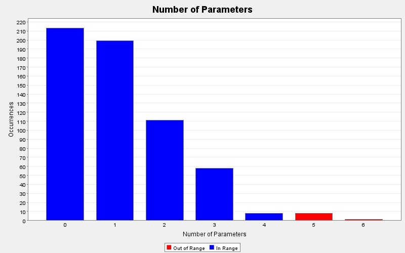

Produced by State Of Flow Eclipse Metrics on Mon Mar 19 21:55:59 CET 2012
|  |
|
| CC | FE | LOCm | NLS | NOL | NOP | NOS | Line | Method | Type | Package |
|---|---|---|---|---|---|---|---|---|---|---|
| 6 | 1 | 38 | 6 | 5 | 6 | 31 | 86 | transformUnaryOp(org.antlr.runtime.tree.Tree, org.eclipse.gmt.modisco.omg.kdm.code.CodeItem, java.lang.String, java.util.Deque | OperatorTransformator | mapping.code.transformator |
| 5 | 0 | 41 | 8 | 3 | 5 | 30 | 44 | readInto(org.eclipse.gmt.modisco.omg.kdm.source.SourceFile, org.eclipse.gmt.modisco.omg.kdm.code.CodeModel, org.eclipse.gmt.modisco.omg.kdm.code.Module, org.eclipse.gmt.modisco.omg.kdm.code.CodeModel, org.eclipse.core.runtime.IProgressMonitor) | CSharpMemberDeclarationParser | mapping.code.parser |
| 5 | 0 | 47 | 8 | 3 | 5 | 30 | 49 | readInto(org.eclipse.gmt.modisco.omg.kdm.source.SourceFile, org.eclipse.gmt.modisco.omg.kdm.code.CodeModel, org.eclipse.gmt.modisco.omg.kdm.code.Module, org.eclipse.gmt.modisco.omg.kdm.code.CodeModel, org.eclipse.core.runtime.IProgressMonitor) | CSharpSourceFileParser | mapping.code.parser |
| - | - | - | - | - | 5 | - | 12 | readInto(org.eclipse.gmt.modisco.omg.kdm.source.SourceFile, org.eclipse.gmt.modisco.omg.kdm.code.CodeModel, org.eclipse.gmt.modisco.omg.kdm.code.Module, org.eclipse.gmt.modisco.omg.kdm.code.CodeModel, org.eclipse.core.runtime.IProgressMonitor) | ISourceFileParser | mapping.code.parser |
| 11 | 0 | 82 | 0 | 3 | 5 | 56 | 141 | resolveIdentifier(java.lang.String, java.util.List | IdentifierResolver | mapping.code.resolver |
| 4 | 0 | 25 | 0 | 2 | 5 | 18 | 63 | resolveType(java.util.List | IdentifierResolver | mapping.code.resolver |
| 1 | 0 | 26 | 0 | 1 | 5 | 13 | 89 | MemberDeclarationsTransformator(mapping.code.language.GenericLanguageUnitCache, org.eclipse.gmt.modisco.omg.kdm.code.CodeModel, org.eclipse.gmt.modisco.omg.kdm.code.Module, org.eclipse.gmt.modisco.omg.kdm.code.CodeModel, mapping.code.extern.ExternalDatatypeInfoRepository) | MemberDeclarationsTransformator | mapping.code.transformator |
| 1 | 0 | 26 | 0 | 1 | 5 | 15 | 97 | Transformator(mapping.code.language.GenericLanguageUnitCache, org.eclipse.gmt.modisco.omg.kdm.code.CodeModel, org.eclipse.gmt.modisco.omg.kdm.code.Module, org.eclipse.gmt.modisco.omg.kdm.code.CodeModel, mapping.code.extern.ExternalDatatypeInfoRepository) | Transformator | mapping.code.transformator |
| 17 | 0 | 110 | 4 | 5 | 5 | 94 | 48 | transform(org.antlr.runtime.tree.CommonTree, org.eclipse.gmt.modisco.omg.kdm.code.CodeItem, java.util.List | TypeTransformator | mapping.code.transformator |
| 1 | 0 | 14 | 0 | 1 | 4 | 9 | 130 | buildMemberDeclarations(org.eclipse.gmt.modisco.omg.kdm.code.CodeModel, mapping.code.parser.CSharpMemberDeclarationParser, mapping.source.InventoryModelWalker, org.eclipse.core.runtime.IProgressMonitor) | CodeModelCreator | mapping.code |
| 1 | 0 | 11 | 0 | 1 | 4 | 7 | 145 | buildSequentially(org.eclipse.gmt.modisco.omg.kdm.code.CodeModel, mapping.code.parser.CSharpSourceFileParser, mapping.source.InventoryModelWalker, org.eclipse.core.runtime.IProgressMonitor) | CodeModelCreator | mapping.code |
| 4 | 2 | 16 | 0 | 4 | 4 | 12 | 98 | findItem(java.util.Collection | NamespaceSearcher | mapping.code.namespace |
| 1 | 0 | 7 | 0 | 1 | 4 | 3 | 54 | IdentifierResolver(mapping.code.namespace.NamespaceSearcher, mapping.code.extern.ExternalDatatypeInfoRepository, java.util.Map | IdentifierResolver | mapping.code.resolver |
| 1 | 0 | 9 | 0 | 1 | 4 | 5 | 30 | SequentialParseVisitor(org.eclipse.gmt.modisco.omg.kdm.code.CodeModel, org.eclipse.gmt.modisco.omg.kdm.code.CodeModel, org.eclipse.core.runtime.IProgressMonitor, org.eclipse.gmt.modisco.omg.kdm.code.Module) | SequentialParseVisitor | mapping.code.visitor |
| 2 | 0 | 22 | 0 | 2 | 4 | 7 | 21 | startElement(java.lang.String, java.lang.String, java.lang.String, org.xml.sax.Attributes) | CSharpProjectSAXHandler | mapping.project |
| 1 | 0 | 8 | 0 | 1 | 4 | 3 | 127 | initialize(java.lang.String[], java.lang.String[], org.eclipse.core.resources.IFolder, org.cloudmig.cloudmigxpress.common.ILogger) | CSharpKDMDiscoverer | org.cloudmig.cloudmigxpress.kdmdiscoverer.csharp |
| 4 | - | 34 | 5 | 4 | 4 | 29 | 39 | assertFieldDeclaration(java.util.List | Assert | util.test |
| 1 | - | - | 0 | 1 | 3 | 0 | 45 | enterDir(java.io.File, java.io.File, org.eclipse.core.runtime.IProgressMonitor) | DecompileAll$(anonymous) | example |
| 1 | - | - | 0 | 1 | 3 | 0 | 50 | exitDir(java.io.File, java.io.File, org.eclipse.core.runtime.IProgressMonitor) | DecompileAll$(anonymous) | example |
| 4 | - | - | 5 | 3 | 3 | 22 | 23 | updateFile(java.io.File, java.io.File, org.eclipse.core.runtime.IProgressMonitor) | DecompileAll$(anonymous) | example |
| 4 | 1 | 45 | 7 | 2 | 3 | 24 | 158 | buildConcurrently(mapping.code.parser.CSharpSourceFileParser, mapping.source.InventoryModelWalker, org.eclipse.core.runtime.IProgressMonitor) | CodeModelCreator | mapping.code |
| 1 | 0 | 13 | 0 | 1 | 3 | 9 | 116 | buildTypes(mapping.code.parser.CSharpTypeParser, mapping.source.InventoryModelWalker, org.eclipse.core.runtime.IProgressMonitor) | CodeModelCreator | mapping.code |
| 3 | 1 | 19 | 3 | 3 | 3 | 13 | 204 | mergeAllThreadsCodeModels(java.util.concurrent.BlockingQueue | CodeModelCreator | mapping.code |
| 3 | - | 10 | 0 | 3 | 3 | 5 | 208 | setModifiersTo(org.eclipse.gmt.modisco.omg.kdm.code.CodeItem, java.util.List | MoDiscoKDM | mapping.code |
| 1 | 0 | 12 | 0 | 1 | 3 | 10 | 46 | SourceFile2ModelTransformator(java.util.concurrent.BlockingQueue | SourceFile2ModelTransformator | mapping.code |
| 1 | 0 | 5 | 0 | 1 | 3 | 2 | 472 | walk(org.antlr.runtime.tree.Tree, mapping.code.extern.entity.DatatypeInfo, java.lang.Class | DatatypeInfoMapper | mapping.code.extern |
| 1 | 0 | 7 | 0 | 1 | 3 | 4 | 38 | insertDatatypeIntoNamespaceHierarchy(java.util.List | NamespaceBuilder | mapping.code.namespace |
| 4 | 0 | 23 | 0 | 3 | 3 | 14 | 163 | findItemTryingAllImports(java.lang.String, org.eclipse.gmt.modisco.omg.kdm.code.Namespace, java.util.Collection | NamespaceSearcher | mapping.code.namespace |
| 5 | 0 | 32 | 0 | 3 | 3 | 16 | 115 | findNamespaceTryingAllImports(java.util.Collection | NamespaceSearcher | mapping.code.namespace |
| 7 | 1 | 29 | 0 | 3 | 3 | 25 | 187 | getItemByNameFromInheritance(java.lang.String, org.eclipse.gmt.modisco.omg.kdm.code.Datatype, java.lang.Class) | NamespaceSearcher | mapping.code.namespace |
| 1 | 0 | 7 | 0 | 1 | 3 | 4 | 19 | NamespaceStack(org.eclipse.gmt.modisco.omg.kdm.code.Namespace, mapping.code.namespace.NamespaceSearcher, mapping.code.resolver.Resolver) | NamespaceStack | mapping.code.namespace |
| 1 | 0 | 5 | 0 | 1 | 3 | 2 | 13 | StackListener(java.util.List | StackListener | mapping.code.namespace.listener |
| 5 | 1 | 47 | 9 | 3 | 3 | 38 | 32 | readInto(org.eclipse.gmt.modisco.omg.kdm.source.SourceFile, org.eclipse.gmt.modisco.omg.kdm.code.CodeModel, org.eclipse.core.runtime.IProgressMonitor) | CSharpTypeParser | mapping.code.parser |
| - | - | - | - | - | 3 | - | 9 | readInto(org.eclipse.gmt.modisco.omg.kdm.source.SourceFile, org.eclipse.gmt.modisco.omg.kdm.code.CodeModel, org.eclipse.core.runtime.IProgressMonitor) | ISourceFileTypeParser | mapping.code.parser |
| 1 | 0 | 6 | 0 | 1 | 3 | 3 | 13 | walk(org.antlr.runtime.tree.Tree, org.eclipse.gmt.modisco.omg.kdm.code.CodeItem, java.lang.Class | AbstractTransformator | mapping.code.transformator |
| 8 | 1 | 52 | 0 | 3 | 3 | 38 | 98 | transformConstant(org.antlr.runtime.tree.CommonTree, org.eclipse.gmt.modisco.omg.kdm.code.CodeItem, java.util.Deque | DeclaratorTransformer | mapping.code.transformator |
| 2 | 0 | 35 | 0 | 2 | 3 | 24 | 151 | transformLocalVariable(org.antlr.runtime.tree.CommonTree, org.eclipse.gmt.modisco.omg.kdm.code.CodeItem, java.util.Deque | DeclaratorTransformer | mapping.code.transformator |
| 9 | 0 | 57 | 0 | 3 | 3 | 45 | 40 | transformMemberVariable(org.antlr.runtime.tree.CommonTree, org.eclipse.gmt.modisco.omg.kdm.code.CodeItem, java.util.Deque | DeclaratorTransformer | mapping.code.transformator |
| 6 | 0 | 54 | 0 | 3 | 3 | 43 | 187 | transformProperty(org.antlr.runtime.tree.CommonTree, org.eclipse.gmt.modisco.omg.kdm.code.CodeItem, java.util.Deque | DeclaratorTransformer | mapping.code.transformator |
| 1 | 0 | 4 | 0 | 1 | 3 | 2 | 35 | walk(org.antlr.runtime.tree.Tree, org.eclipse.gmt.modisco.omg.kdm.code.CodeItem, java.lang.Class | DeclaratorTransformer | mapping.code.transformator |
| 1 | 0 | 3 | 0 | 1 | 3 | 2 | 49 | walk(org.antlr.runtime.tree.Tree, org.eclipse.gmt.modisco.omg.kdm.code.CodeItem, java.lang.Class | IdentifierTransformator | mapping.code.transformator |
| 5 | 0 | 13 | 0 | 3 | 3 | 12 | 25 | getValueFromValueRepository(java.lang.String, java.lang.String, org.eclipse.gmt.modisco.omg.kdm.code.Datatype) | LiteralTransformer | mapping.code.transformator |
| 4 | 0 | 29 | 0 | 4 | 3 | 27 | 59 | transformDoWhile(org.antlr.runtime.tree.CommonTree, org.eclipse.gmt.modisco.omg.kdm.code.CodeItem, java.util.Deque | LoopTransformator | mapping.code.transformator |
| 8 | 2 | 51 | 0 | 4 | 3 | 47 | 89 | transformFor(org.antlr.runtime.tree.CommonTree, org.eclipse.gmt.modisco.omg.kdm.code.CodeItem, java.util.Deque | LoopTransformator | mapping.code.transformator |
| 1 | 1 | 16 | 0 | 2 | 3 | 8 | 141 | transformForeach(org.antlr.runtime.tree.CommonTree, org.eclipse.gmt.modisco.omg.kdm.code.CodeItem, java.util.Deque | LoopTransformator | mapping.code.transformator |
| 3 | 0 | 27 | 0 | 3 | 3 | 25 | 31 | transformWhile(org.antlr.runtime.tree.CommonTree, org.eclipse.gmt.modisco.omg.kdm.code.CodeItem, java.util.Deque | LoopTransformator | mapping.code.transformator |
| 1 | 0 | 3 | 0 | 1 | 3 | 2 | 27 | walk(org.antlr.runtime.tree.Tree, org.eclipse.gmt.modisco.omg.kdm.code.CodeItem, java.lang.Class | LoopTransformator | mapping.code.transformator |
| 6 | 0 | 74 | 0 | 3 | 3 | 60 | 35 | transform(org.antlr.runtime.tree.CommonTree, org.eclipse.gmt.modisco.omg.kdm.code.AbstractCodeElement, mapping.code.namespace.NamespaceStack) | MethodTransformator | mapping.code.transformator |
| 1 | 0 | 4 | 0 | 1 | 3 | 2 | 110 | walk(org.antlr.runtime.tree.Tree, org.eclipse.gmt.modisco.omg.kdm.code.CodeItem, java.lang.Class | MethodTransformator | mapping.code.transformator |
| 10 | 1 | 51 | 7 | 4 | 3 | 43 | 29 | transformBinaryOp(org.antlr.runtime.tree.Tree, org.eclipse.gmt.modisco.omg.kdm.code.CodeItem, java.lang.String) | OperatorTransformator | mapping.code.transformator |
| 4 | 1 | 24 | 4 | 3 | 3 | 20 | 125 | transformPrefixUnaryOp(org.antlr.runtime.tree.Tree, org.eclipse.gmt.modisco.omg.kdm.code.CodeItem, java.lang.String) | OperatorTransformator | mapping.code.transformator |
| 1 | 0 | 4 | 0 | 1 | 3 | 2 | 81 | walk(org.antlr.runtime.tree.Tree, org.eclipse.gmt.modisco.omg.kdm.code.CodeItem, java.lang.Class | OperatorTransformator | mapping.code.transformator |
| 9 | 3 | 53 | 0 | 3 | 3 | 43 | 55 | transformFixedParameter(org.antlr.runtime.tree.CommonTree, org.eclipse.gmt.modisco.omg.kdm.code.CodeItem, java.util.Deque | ParameterTransformer | mapping.code.transformator |
| 1 | 0 | 19 | 0 | 1 | 3 | 16 | 35 | transformParameterArray(org.antlr.runtime.tree.CommonTree, org.eclipse.gmt.modisco.omg.kdm.code.CodeItem, java.util.Deque | ParameterTransformer | mapping.code.transformator |
| 1 | 0 | 10 | 0 | 1 | 3 | 8 | 109 | transformTypeParameter(org.antlr.runtime.tree.CommonTree, org.eclipse.gmt.modisco.omg.kdm.code.CodeItem, java.util.Deque | ParameterTransformer | mapping.code.transformator |
| 1 | 0 | 3 | 0 | 1 | 3 | 2 | 31 | walk(org.antlr.runtime.tree.Tree, org.eclipse.gmt.modisco.omg.kdm.code.CodeItem, java.lang.Class | ParameterTransformer | mapping.code.transformator |
| 1 | 0 | 16 | 0 | 1 | 3 | 14 | 191 | registerType(org.antlr.runtime.tree.CommonTree, org.eclipse.gmt.modisco.omg.kdm.source.SourceRef, org.eclipse.gmt.modisco.omg.kdm.code.Datatype) | PreTransformator | mapping.code.transformator |
| 1 | 0 | 5 | 0 | 1 | 3 | 3 | 208 | walk(org.antlr.runtime.tree.Tree, org.eclipse.gmt.modisco.omg.kdm.code.CodeItem, java.lang.Class | PreTransformator | mapping.code.transformator |
| 1 | 0 | 6 | 0 | 1 | 3 | 3 | 959 | walk(org.antlr.runtime.tree.Tree, org.eclipse.gmt.modisco.omg.kdm.code.CodeItem, java.lang.Class | Transformator | mapping.code.transformator |
| 1 | 0 | 7 | 0 | 1 | 3 | 3 | 40 | TypeTransformator(mapping.code.resolver.IdentifierResolver, mapping.code.language.GenericLanguageUnitCache, mapping.code.transformator.AbstractTransformator) | TypeTransformator | mapping.code.transformator |
| 1 | 0 | 5 | 0 | 1 | 3 | 1 | 44 | endElement(java.lang.String, java.lang.String, java.lang.String) | CSharpProjectSAXHandler | mapping.project |
| 1 | 0 | 11 | 0 | 1 | 3 | 9 | 87 | enterDir(java.io.File, java.io.File, org.eclipse.core.runtime.IProgressMonitor) | InventoryModelFileListener | mapping.source |
| 1 | 0 | 5 | 0 | 1 | 3 | 3 | 99 | exitDir(java.io.File, java.io.File, org.eclipse.core.runtime.IProgressMonitor) | InventoryModelFileListener | mapping.source |
| 6 | 0 | 42 | 0 | 6 | 3 | 42 | 44 | updateFile(java.io.File, java.io.File, org.eclipse.core.runtime.IProgressMonitor) | InventoryModelFileListener | mapping.source |
| 5 | - | 26 | 1 | 4 | 3 | 14 | 129 | getAbstractCodeElementByName(java.util.List, java.lang.String, java.lang.Class | KDMChildHelper | mapping.util |
| 3 | - | 17 | 0 | 3 | 3 | 8 | 37 | getChildItemByName(java.lang.String, java.util.List, java.lang.Class | KDMChildHelper | mapping.util |
| 1 | - | 5 | 0 | 1 | 3 | 4 | 31 | getChildItemByName(java.lang.String, org.eclipse.gmt.modisco.omg.kdm.code.CodeItem, java.lang.Class | KDMChildHelper | mapping.util |
| 1 | 0 | 5 | 0 | 1 | 3 | 2 | 28 | CSharpProgressMonitor(org.eclipse.core.runtime.IProgressMonitor, org.cloudmig.cloudmigxpress.common.ILogger, int) | CSharpKDMDiscoverer.CSharpProgressMonitor | org.cloudmig.cloudmigxpress.kdmdiscoverer.csharp |
| 2 | - | 11 | 1 | 2 | 3 | 5 | 39 | saveEcoreToXMI(org.eclipse.emf.ecore.EObject, java.lang.String, org.eclipse.core.runtime.IProgressMonitor) | FileAccess | util |
| 1 | - | 28 | 0 | 1 | 3 | 9 | 51 | saveEcoreToXMIUnsafe(org.eclipse.emf.ecore.EObject, java.lang.String, org.eclipse.core.runtime.IProgressMonitor) | FileAccess | util |
| 3 | - | 18 | 0 | 3 | 3 | 8 | 144 | walkDirectoryRecursively(java.io.File, util.FileListener, org.eclipse.core.runtime.IProgressMonitor) | FileAccess | util |
| - | - | - | - | - | 3 | - | 10 | enterDir(java.io.File, java.io.File, org.eclipse.core.runtime.IProgressMonitor) | FileListener | util |
| - | - | - | - | - | 3 | - | 11 | exitDir(java.io.File, java.io.File, org.eclipse.core.runtime.IProgressMonitor) | FileListener | util |
| - | - | - | - | - | 3 | - | 9 | updateFile(java.io.File, java.io.File, org.eclipse.core.runtime.IProgressMonitor) | FileListener | util |
| 1 | 0 | 8 | 0 | 1 | 3 | 2 | 251 | read(byte, int, int) | UnicodeBOMInputStream | util.unicode |
| 1 | - | 15 | 0 | 1 | 2 | 12 | 112 | addAttribute(org.eclipse.emf.common.util.EList | KDMCreationTest | example |
| 2 | 0 | 12 | 0 | 2 | 2 | 5 | 35 | beginTask(java.lang.String, int) | ProgressMonitorExample | example |
| 1 | 0 | 10 | 0 | 1 | 2 | 6 | 89 | transform(java.lang.String, java.lang.String) | TransformationTest | example |
| 1 | 0 | 6 | 0 | 1 | 2 | 3 | 32 | beginTask(java.lang.String, int) | TransformationTest.BasicProgressMonitor | example |
| 1 | 2 | 5 | 0 | 1 | 2 | 4 | 10 | CSharp4PreProcessorImpl(org.antlr.runtime.CharStream, java.lang.String) | CSharp4PreProcessorImpl | lang.csharp |
| 1 | 0 | 3 | 0 | 1 | 2 | 1 | 29 | and(lang.csharp.Expression, lang.csharp.Expression) | Expression | lang.csharp |
| 1 | 0 | 3 | 0 | 1 | 2 | 1 | 33 | equal(lang.csharp.Expression, lang.csharp.Expression) | Expression | lang.csharp |
| 1 | 0 | 3 | 0 | 1 | 2 | 1 | 25 | or(lang.csharp.Expression, lang.csharp.Expression) | Expression | lang.csharp |
| 1 | 0 | 3 | 0 | 1 | 2 | 1 | 37 | unequal(lang.csharp.Expression, lang.csharp.Expression) | Expression | lang.csharp |
| 3 | - | 21 | 0 | 3 | 2 | 13 | 63 | buildAST(lang.java.JavaParser.compilationUnit_return, org.antlr.runtime.CommonTokenStream) | Test | lang.java |
| - | - | - | - | - | 2 | - | 13 | transform(org.antlr.runtime.tree.CommonTree, org.eclipse.gmt.modisco.omg.kdm.source.SourceFile) | IKDMMapper | mapping |
| - | - | - | - | - | 2 | - | 9 | openDirectory(java.io.File, org.eclipse.core.runtime.IProgressMonitor) | IModelCreator | mapping |
| - | - | - | - | - | 2 | - | 11 | openDirectory(java.lang.String, org.eclipse.core.runtime.IProgressMonitor) | IModelCreator | mapping |
| 1 | - | 8 | 0 | 1 | 2 | 7 | 259 | addQualifiedAttributeTo(org.eclipse.gmt.modisco.omg.kdm.code.Datatype, java.util.List | KDMElementFactory | mapping |
| 1 | - | 7 | 0 | 1 | 2 | 5 | 246 | createCalls(org.eclipse.gmt.modisco.omg.kdm.action.ActionElement, org.eclipse.gmt.modisco.omg.kdm.code.ControlElement) | KDMElementFactory | mapping |
| 1 | - | 7 | 0 | 1 | 2 | 5 | 287 | createCreates(org.eclipse.gmt.modisco.omg.kdm.action.ActionElement, org.eclipse.gmt.modisco.omg.kdm.code.Datatype) | KDMElementFactory | mapping |
| 1 | - | 39 | 0 | 1 | 2 | 20 | 128 | createGenericCodeModel(java.lang.String, mapping.KDMElementFactory.GlobalKind) | KDMElementFactory | mapping |
| 1 | - | 8 | 0 | 1 | 2 | 5 | 225 | createHasValue(org.eclipse.gmt.modisco.omg.kdm.code.DataElement, org.eclipse.gmt.modisco.omg.kdm.code.AbstractCodeElement) | KDMElementFactory | mapping |
| 1 | - | 7 | 0 | 1 | 2 | 5 | 273 | createImports(org.eclipse.gmt.modisco.omg.kdm.code.CodeItem, org.eclipse.gmt.modisco.omg.kdm.code.Namespace) | KDMElementFactory | mapping |
| 1 | - | 12 | 0 | 1 | 2 | 10 | 199 | createReadAccess(org.eclipse.gmt.modisco.omg.kdm.action.ActionElement, org.eclipse.gmt.modisco.omg.kdm.code.DataElement) | KDMElementFactory | mapping |
| 1 | - | 12 | 0 | 1 | 2 | 10 | 212 | createWriteAccess(org.eclipse.gmt.modisco.omg.kdm.action.ActionElement, org.eclipse.gmt.modisco.omg.kdm.code.DataElement) | KDMElementFactory | mapping |
| 3 | 0 | 34 | 0 | 3 | 2 | 19 | 46 | buildCodeModel(org.eclipse.gmt.modisco.omg.kdm.source.InventoryModel, org.eclipse.core.runtime.IProgressMonitor) | CodeModelCreator | mapping.code |
| 3 | 0 | 34 | 0 | 2 | 2 | 18 | 81 | buildCodeModels(mapping.source.InventoryModelWalker, org.eclipse.core.runtime.IProgressMonitor) | CodeModelCreator | mapping.code |
| 2 | 0 | 12 | 0 | 2 | 2 | 3 | 224 | merge(org.eclipse.gmt.modisco.omg.kdm.code.CodeModel, org.eclipse.gmt.modisco.omg.kdm.code.CodeModel) | CodeModelCreator | mapping.code |
| 1 | - | 11 | 0 | 1 | 2 | 4 | 161 | add(org.eclipse.gmt.modisco.omg.kdm.code.CodeModel, org.eclipse.gmt.modisco.omg.kdm.code.AbstractCodeElement) | MoDiscoKDM | mapping.code |
| 1 | - | 10 | 0 | 1 | 2 | 12 | 30 | addModifierTo(org.eclipse.gmt.modisco.omg.kdm.code.AbstractCodeElement, java.lang.String) | MoDiscoKDM | mapping.code |
| 1 | - | 8 | 0 | 1 | 2 | 6 | 55 | createAndAddAccessModifier(java.lang.String, org.eclipse.gmt.modisco.omg.kdm.code.ClassUnit) | MoDiscoKDM | mapping.code |
| 1 | 0 | 4 | 0 | 1 | 2 | 3 | 8 | accept(java.io.File, java.lang.String) | CSharpFilenameFilter | mapping.code.extern |
| 2 | 3 | 11 | 0 | 2 | 2 | 10 | 426 | setFullPath(mapping.code.extern.entity.DatatypeInfo, mapping.code.extern.entity.DatatypeInfo) | DatatypeInfoMapper | mapping.code.extern |
| 1 | 0 | 4 | 0 | 1 | 2 | 1 | 483 | transform(org.antlr.runtime.tree.CommonTree, org.eclipse.gmt.modisco.omg.kdm.source.SourceFile) | DatatypeInfoMapper | mapping.code.extern |
| 59 | 21 | 363 | 0 | 5 | 2 | 298 | 62 | walk(org.antlr.runtime.tree.Tree, mapping.code.extern.entity.DatatypeInfo) | DatatypeInfoMapper | mapping.code.extern |
| 1 | 0 | 5 | 0 | 1 | 2 | 2 | 35 | ExternalDatatypeInfoRepository(java.lang.String, mapping.code.extern.loader.IDatatypeInfoLoader) | ExternalDatatypeInfoRepository | mapping.code.extern |
| 2 | 1 | 5 | 0 | 2 | 2 | 5 | 101 | buildKey(java.lang.String, java.lang.String) | ExternalDatatypeInfoRepository | mapping.code.extern |
| 6 | 0 | 33 | 0 | 4 | 2 | 31 | 61 | findItem(java.lang.String, java.util.List | ExternalDatatypeInfoRepository | mapping.code.extern |
| 4 | 0 | 34 | 0 | 2 | 2 | 24 | 107 | getReferenceInfo(java.lang.String, java.lang.String) | ExternalDatatypeInfoRepository | mapping.code.extern |
| 1 | 0 | 7 | 0 | 1 | 2 | 4 | 151 | getReferenceInfo(java.util.List | ExternalDatatypeInfoRepository | mapping.code.extern |
| 1 | 0 | 8 | 0 | 1 | 2 | 5 | 142 | getReferenceInfo(org.eclipse.gmt.modisco.omg.kdm.code.CodeItem, java.lang.String) | ExternalDatatypeInfoRepository | mapping.code.extern |
| 1 | 0 | 4 | 0 | 1 | 2 | 2 | 14 | ParameterInfo(java.lang.String, java.lang.String) | MethodInfo.ParameterInfo | mapping.code.extern.entity |
| 1 | 0 | 4 | 0 | 1 | 2 | 2 | 10 | NamespaceInfo(java.lang.String, java.lang.String) | NamespaceInfo | mapping.code.extern.entity |
| 1 | 0 | 3 | 0 | 1 | 2 | 1 | 7 | DatatypeInfoLoadException(java.lang.String, java.lang.Throwable) | DatatypeInfoLoadException | mapping.code.extern.loader |
| 1 | 0 | 6 | 0 | 1 | 2 | 5 | 30 | addDatatype(java.lang.String, org.eclipse.gmt.modisco.omg.kdm.code.Datatype) | GenericLanguageUnitCache | mapping.code.language |
| 1 | 0 | 5 | 0 | 1 | 2 | 2 | 18 | NamespaceBuilder(mapping.code.namespace.NamespaceSearcher, mapping.code.resolver.IdentifierResolver) | NamespaceBuilder | mapping.code.namespace |
| 1 | 0 | 13 | 0 | 1 | 2 | 1 | 24 | insertDatatypeIntoExternalCodeModel(java.util.List | NamespaceBuilder | mapping.code.namespace |
| 1 | 0 | 5 | 0 | 1 | 2 | 3 | 46 | updateNamespaceHierarchy(java.util.List | NamespaceBuilder | mapping.code.namespace |
| 3 | 0 | 22 | 0 | 3 | 2 | 13 | 13 | mergeNamespaces(org.eclipse.gmt.modisco.omg.kdm.code.Namespace, org.eclipse.gmt.modisco.omg.kdm.code.Namespace) | NamespaceMerger | mapping.code.namespace |
| 1 | 0 | 8 | 0 | 1 | 2 | 4 | 37 | NamespaceSearcher(org.eclipse.gmt.modisco.omg.kdm.code.Namespace, org.eclipse.gmt.modisco.omg.kdm.code.Namespace) | NamespaceSearcher | mapping.code.namespace |
| 3 | 0 | 20 | 0 | 3 | 2 | 8 | 217 | findItemTryingAllImports(java.lang.String, java.util.List | NamespaceSearcher | mapping.code.namespace |
| 2 | 0 | 19 | 0 | 2 | 2 | 7 | 78 | findNamespaceFromGlobals(java.util.List | NamespaceSearcher | mapping.code.namespace |
| 1 | 0 | 6 | 0 | 1 | 2 | 3 | 16 | onNullItem(java.lang.String, org.eclipse.gmt.modisco.omg.kdm.code.Namespace) | BuildNamespaceHierarchyListener | mapping.code.namespace.listener |
| - | - | - | - | - | 2 | - | 7 | onNullItem(java.lang.String, T) | KdmListener | mapping.code.namespace.listener |
| 1 | 0 | 5 | 0 | 1 | 2 | 1 | 8 | onNullItem(java.lang.String, T) | NullListener | mapping.code.namespace.listener |
| 1 | 0 | 6 | 0 | 1 | 2 | 4 | 37 | CSharpMemberDeclarationParser(mapping.code.visitor.LanguageUnitDetectorVisitor, mapping.code.extern.ExternalDatatypeInfoRepository) | CSharpMemberDeclarationParser | mapping.code.parser |
| 1 | 0 | 11 | 0 | 1 | 2 | 4 | 37 | CSharpSourceFileParser(mapping.code.visitor.LanguageUnitDetectorVisitor, mapping.code.extern.ExternalDatatypeInfoRepository) | CSharpSourceFileParser | mapping.code.parser |
| 1 | 0 | 6 | 0 | 1 | 2 | 3 | 31 | FSResolver(mapping.code.extern.ExternalDatatypeInfoRepository, mapping.code.namespace.NamespaceSearcher) | FSResolver | mapping.code.resolver |
| 7 | 0 | 25 | 0 | 7 | 2 | 24 | 71 | addToOwner(org.eclipse.gmt.modisco.omg.kdm.code.CodeItem, org.eclipse.gmt.modisco.omg.kdm.code.CodeItem) | FSResolver | mapping.code.resolver |
| 3 | 0 | 16 | 3 | 2 | 2 | 10 | 54 | fs_findItem(java.lang.String, org.eclipse.gmt.modisco.omg.kdm.code.CodeItem) | FSResolver | mapping.code.resolver |
| 3 | 0 | 9 | 0 | 3 | 2 | 6 | 38 | fs_findItemTryingAllImports(java.lang.String, java.util.List | FSResolver | mapping.code.resolver |
| 3 | 2 | 18 | 0 | 3 | 2 | 14 | 122 | getUsingDirectives(org.eclipse.gmt.modisco.omg.kdm.code.CompilationUnit, mapping.code.namespace.NamespaceStack) | IdentifierResolver | mapping.code.resolver |
| 4 | 1 | 32 | 0 | 3 | 2 | 27 | 89 | getUsingDirectives1(org.eclipse.gmt.modisco.omg.kdm.code.CompilationUnit, mapping.code.namespace.NamespaceStack) | IdentifierResolver | mapping.code.resolver |
| 10 | 1 | 58 | 0 | 3 | 2 | 38 | 244 | resolveFurtherIdentifier(org.eclipse.gmt.modisco.omg.kdm.code.CodeItem, java.lang.String) | IdentifierResolver | mapping.code.resolver |
| 2 | 3 | 19 | 0 | 2 | 2 | 17 | 13 | fs_findItem(java.lang.String, org.eclipse.gmt.modisco.omg.kdm.code.CodeItem) | NamespaceResolver | mapping.code.resolver |
| - | - | - | - | - | 2 | - | 9 | fs_findItem(java.lang.String, org.eclipse.gmt.modisco.omg.kdm.code.CodeItem) | Resolver | mapping.code.resolver |
| - | - | - | 0 | - | 2 | - | 10 | walk(org.antlr.runtime.tree.Tree, org.eclipse.gmt.modisco.omg.kdm.code.CodeItem) | AbstractTransformator | mapping.code.transformator |
| 1 | 0 | 4 | 0 | 1 | 2 | 1 | 30 | DeclaratorTransformer(mapping.code.transformator.AbstractTransformator, org.eclipse.gmt.modisco.omg.kdm.code.CodeModel) | DeclaratorTransformer | mapping.code.transformator |
| 5 | 0 | 27 | 0 | 3 | 2 | 23 | 21 | transformNamespaceOrTypename(org.antlr.runtime.tree.BaseTree, org.eclipse.gmt.modisco.omg.kdm.code.CodeItem) | IdentifierTransformator | mapping.code.transformator |
| 1 | 0 | 6 | 0 | 1 | 2 | 2 | 18 | LiteralTransformer(mapping.code.language.GenericLanguageUnitCache, org.eclipse.gmt.modisco.omg.kdm.code.Module) | LiteralTransformer | mapping.code.transformator |
| 2 | 0 | 18 | 0 | 2 | 2 | 15 | 152 | transformBoolean(org.antlr.runtime.tree.CommonTree, org.eclipse.gmt.modisco.omg.kdm.code.AbstractCodeElement) | LiteralTransformer | mapping.code.transformator |
| 2 | 0 | 19 | 0 | 2 | 2 | 18 | 111 | transformCharacter(org.antlr.runtime.tree.CommonTree, org.eclipse.gmt.modisco.omg.kdm.code.AbstractCodeElement) | LiteralTransformer | mapping.code.transformator |
| 2 | 0 | 21 | 0 | 2 | 2 | 15 | 67 | transformInteger(org.antlr.runtime.tree.CommonTree, org.eclipse.gmt.modisco.omg.kdm.code.AbstractCodeElement) | LiteralTransformer | mapping.code.transformator |
| 2 | 0 | 20 | 0 | 2 | 2 | 13 | 131 | transformNull(org.antlr.runtime.tree.CommonTree, org.eclipse.gmt.modisco.omg.kdm.code.AbstractCodeElement) | LiteralTransformer | mapping.code.transformator |
| 2 | 0 | 21 | 0 | 2 | 2 | 15 | 89 | transformReal(org.antlr.runtime.tree.CommonTree, org.eclipse.gmt.modisco.omg.kdm.code.AbstractCodeElement) | LiteralTransformer | mapping.code.transformator |
| 2 | 0 | 19 | 0 | 2 | 2 | 19 | 47 | transformString(org.antlr.runtime.tree.CommonTree, org.eclipse.gmt.modisco.omg.kdm.code.AbstractCodeElement) | LiteralTransformer | mapping.code.transformator |
| 3 | 0 | 22 | 0 | 2 | 2 | 12 | 759 | mapInterfaceToRelation(java.util.List | MemberDeclarationsTransformator | mapping.code.transformator |
| 8 | 0 | 58 | 3 | 4 | 2 | 37 | 700 | mapToRelation(java.util.List | MemberDeclarationsTransformator | mapping.code.transformator |
| 2 | 0 | 13 | 2 | 2 | 2 | 6 | 782 | setType(org.eclipse.gmt.modisco.omg.kdm.code.DataElement, java.lang.String) | MemberDeclarationsTransformator | mapping.code.transformator |
| 3 | 0 | 21 | 2 | 3 | 2 | 15 | 121 | transform(org.antlr.runtime.tree.CommonTree, org.eclipse.gmt.modisco.omg.kdm.source.SourceFile) | MemberDeclarationsTransformator | mapping.code.transformator |
| 83 | 25 | 544 | 70 | 7 | 2 | 421 | 143 | walk(org.antlr.runtime.tree.Tree, org.eclipse.gmt.modisco.omg.kdm.code.CodeItem) | MemberDeclarationsTransformator | mapping.code.transformator |
| 3 | 0 | 9 | 0 | 3 | 2 | 7 | 115 | setMethodKind(java.lang.String, org.eclipse.gmt.modisco.omg.kdm.code.MethodUnit) | MethodTransformator | mapping.code.transformator |
| 5 | 1 | 28 | 0 | 5 | 2 | 13 | 125 | setMethodModifier(java.lang.String, org.eclipse.gmt.modisco.omg.kdm.code.MethodUnit) | MethodTransformator | mapping.code.transformator |
| 1 | 0 | 5 | 0 | 1 | 2 | 2 | 23 | OperatorTransformator(mapping.code.transformator.Transformator, mapping.code.resolver.IdentifierResolver) | OperatorTransformator | mapping.code.transformator |
| 2 | 0 | 24 | 0 | 2 | 2 | 24 | 53 | transform(org.antlr.runtime.tree.CommonTree, org.eclipse.gmt.modisco.omg.kdm.source.SourceFile) | PreTransformator | mapping.code.transformator |
| 16 | 4 | 112 | 0 | 4 | 2 | 93 | 78 | walk(org.antlr.runtime.tree.Tree, org.eclipse.gmt.modisco.omg.kdm.code.CodeItem) | PreTransformator | mapping.code.transformator |
| 2 | 0 | 13 | 2 | 2 | 2 | 6 | 966 | setType(org.eclipse.gmt.modisco.omg.kdm.code.DataElement, java.lang.String) | Transformator | mapping.code.transformator |
| 3 | 0 | 20 | 2 | 3 | 2 | 15 | 129 | transform(org.antlr.runtime.tree.CommonTree, org.eclipse.gmt.modisco.omg.kdm.source.SourceFile) | Transformator | mapping.code.transformator |
| 156 | 71 | 756 | 78 | 7 | 2 | 694 | 150 | walk(org.antlr.runtime.tree.Tree, org.eclipse.gmt.modisco.omg.kdm.code.CodeItem) | Transformator | mapping.code.transformator |
| 5 | 1 | 17 | 0 | 5 | 2 | 14 | 159 | addGenericToParent(org.eclipse.gmt.modisco.omg.kdm.code.CodeItem, org.eclipse.gmt.modisco.omg.kdm.code.Datatype) | TypeTransformator | mapping.code.transformator |
| 1 | 1 | - | 0 | 1 | 2 | 2 | 32 | accept(java.io.File, java.lang.String) | CSharpProjectDetector$(anonymous) | mapping.project |
| 2 | 0 | 26 | 0 | 2 | 2 | 20 | 24 | openDirectory(java.io.File, org.eclipse.core.runtime.IProgressMonitor) | InventoryModelCreator | mapping.source |
| 1 | 0 | 5 | 0 | 1 | 2 | 2 | 51 | openDirectory(java.lang.String, org.eclipse.core.runtime.IProgressMonitor) | InventoryModelCreator | mapping.source |
| 4 | 0 | 9 | 0 | 4 | 2 | 6 | 26 | walk(java.util.List | InventoryModelWalker | mapping.source |
| 3 | - | 9 | 0 | 3 | 2 | 8 | 11 | goUpToParentType(org.eclipse.emf.ecore.EObject, java.lang.Class | EMFHelper | mapping.util |
| 3 | - | 10 | 0 | 3 | 2 | 7 | 172 | filterChildrenByType(java.util.List | KDMChildHelper | mapping.util |
| 3 | - | 9 | 0 | 3 | 2 | 6 | 60 | getChildItemByType(java.util.List, java.lang.Class | KDMChildHelper | mapping.util |
| 1 | - | 4 | 0 | 1 | 2 | 4 | 55 | getChildItemByType(org.eclipse.gmt.modisco.omg.kdm.code.CodeItem, java.lang.Class | KDMChildHelper | mapping.util |
| 7 | - | 36 | 0 | 4 | 2 | 24 | 92 | getChildMethodByName(java.lang.String, org.eclipse.gmt.modisco.omg.kdm.code.CodeItem) | KDMChildHelper | mapping.util |
| 6 | - | 15 | 0 | 6 | 2 | 11 | 156 | getCompilationUnit(org.eclipse.gmt.modisco.omg.kdm.source.SourceFile, org.eclipse.gmt.modisco.omg.kdm.code.CodeModel) | KDMChildHelper | mapping.util |
| 4 | - | 22 | 0 | 3 | 2 | 23 | 36 | buildSignatureKey(java.lang.String, java.util.List | KeyStringHelper | mapping.util |
| 4 | - | 17 | 0 | 4 | 2 | 18 | 18 | getMethodKey(java.lang.String, java.util.List | KeyStringHelper | mapping.util |
| 2 | - | 26 | 2 | 2 | 2 | 23 | 20 | buildKDMInstance(org.eclipse.gmt.modisco.omg.kdm.source.InventoryModel, org.eclipse.core.runtime.IProgressMonitor) | ModelCreationHelper | mapping.util |
| 4 | - | 29 | 5 | 3 | 2 | 22 | 186 | getFile(java.lang.String, java.lang.String) | FileAccess | util |
| 3 | - | 26 | 0 | 2 | 2 | 20 | 80 | loadEcoreFromXMIFile(T, java.lang.String) | FileAccess | util |
| 1 | - | 9 | 0 | 2 | 2 | 5 | 134 | saveTextFile(java.lang.String, java.lang.String) | FileAccess | util |
| 3 | - | 13 | 0 | 2 | 2 | 16 | 35 | combine(java.util.Collection, java.lang.String) | ListUtil | util |
| 3 | - | 10 | 0 | 3 | 2 | 4 | 24 | flatten(java.util.Collection, java.util.Collection | ListUtil | util |
| 1 | 0 | 4 | 0 | 1 | 2 | 2 | 8 | Pair(S, T) | Pair | util |
| 1 | - | 3 | 0 | 1 | 2 | 1 | 13 | of(S, T) | Pair | util |
| 3 | - | 21 | 0 | 3 | 2 | 10 | 23 | buildAST(lang.csharp.CSharp4AST.compilation_unit_return, org.antlr.runtime.CommonTokenStream) | Parsing | util |
| 1 | 1 | 5 | 0 | 1 | 2 | 2 | 85 | createJavaSourceCodeFile(java.lang.String, java.lang.String) | TreeClassGenerator | util.generator |
| 2 | - | 17 | 1 | 2 | 2 | 9 | 21 | assertInstanceof(java.lang.Class | Assert | util.test |
| 1 | 0 | 4 | 0 | 1 | 2 | 2 | 21 | ANTLRFileStreamWithBOM(java.lang.String, java.lang.String) | ANTLRFileStreamWithBOM | util.unicode |
| 1 | 0 | 8 | 0 | 1 | 2 | 3 | 133 | BOM(byte, java.lang.String) | UnicodeBOMInputStream.BOM | util.unicode |
| 1 | 0 | 8 | 0 | 1 | 1 | 12 | 37 | CompletenessAnalysis(org.eclipse.gmt.modisco.omg.kdm.kdm.Segment) | CompletenessAnalysis | analysis |
| 3 | 0 | 14 | 0 | 3 | 1 | 13 | 149 | count(java.lang.Class) | CompletenessAnalysis | analysis |
| 5 | 0 | 16 | 0 | 5 | 1 | 18 | 164 | findTypes(java.util.List) | CompletenessAnalysis | analysis |
| 1 | - | 4 | 0 | 1 | 1 | 2 | 46 | main(java.lang.String[]) | CompletenessAnalysis | analysis |
| 3 | - | 36 | 0 | 4 | 1 | 26 | 36 | main(java.lang.String[]) | FileSize | analysis |
| 2 | 0 | 7 | 0 | 2 | 1 | 9 | 27 | visitSourceFile(org.eclipse.gmt.modisco.omg.kdm.source.SourceFile) | FileSize.FileSizeWalker | analysis |
| 4 | - | 20 | 4 | 3 | 1 | 19 | 17 | loadPaths(java.lang.String) | PathLoader | analysis |
| 2 | - | 7 | 0 | 2 | 1 | 5 | 145 | avg(java.util.List | PerformanceAnalysis | analysis |
| 3 | - | 70 | 0 | 4 | 1 | 51 | 74 | main(java.lang.String[]) | PerformanceAnalysis | analysis |
| 2 | - | 9 | 0 | 2 | 1 | 11 | 153 | median(java.util.List | PerformanceAnalysis | analysis |
| 1 | 1 | 10 | 0 | 1 | 1 | 5 | 51 | parse(java.lang.String) | PerformanceAnalysis.ParseVisitor | analysis |
| 1 | 1 | 10 | 0 | 1 | 1 | 5 | 62 | parseWithAST(java.lang.String) | PerformanceAnalysis.ParseVisitor | analysis |
| 4 | 0 | 16 | 1 | 2 | 1 | 12 | 34 | visitSourceFile(org.eclipse.gmt.modisco.omg.kdm.source.SourceFile) | PerformanceAnalysis.ParseVisitor | analysis |
| 1 | - | 11 | 0 | 1 | 1 | 5 | 60 | createCommand(java.lang.String) | DecompileAll | example |
| 7 | - | 39 | 0 | 4 | 1 | 25 | 20 | main(java.lang.String[]) | DecompileAll | example |
| 1 | - | 29 | 0 | 1 | 1 | 30 | 17 | main(java.lang.String[]) | GoUp | example |
| 1 | - | 19 | 0 | 1 | 1 | 22 | 30 | main(java.lang.String[]) | KDMCreationTest | example |
| 1 | 0 | 3 | 0 | 1 | 1 | 0 | 58 | internalWorked(double) | ProgressMonitorExample | example |
| 1 | - | 5 | 0 | 1 | 1 | 2 | 29 | main(java.lang.String) | ProgressMonitorExample | example |
| 1 | 0 | 3 | 0 | 1 | 1 | 0 | 67 | setCanceled(boolean) | ProgressMonitorExample | example |
| 2 | 0 | 9 | 0 | 2 | 1 | 2 | 71 | setTaskName(java.lang.String) | ProgressMonitorExample | example |
| 2 | 0 | 11 | 0 | 2 | 1 | 4 | 81 | subTask(java.lang.String) | ProgressMonitorExample | example |
| 2 | 0 | 12 | 0 | 2 | 1 | 5 | 93 | worked(int) | ProgressMonitorExample | example |
| 2 | - | 7 | 0 | 2 | 1 | 5 | 11 | main(java.lang.String[]) | ReadReferencesFromCSharpProject | example |
| 1 | - | 22 | 0 | 1 | 1 | 24 | 20 | main(java.lang.String[]) | SaveNamespaceTest | example |
| 1 | - | 30 | 0 | 1 | 1 | 7 | 58 | main(java.lang.String[]) | TransformationTest | example |
| 1 | 0 | 4 | 0 | 1 | 1 | 1 | 39 | subTask(java.lang.String) | TransformationTest.BasicProgressMonitor | example |
| 1 | 0 | 5 | 0 | 1 | 1 | 2 | 26 | worked(int) | TransformationTest.BasicProgressMonitor | example |
| 3 | - | 19 | 7 | 2 | 1 | 18 | 17 | main(java.lang.String[]) | Test | lang.calc |
| 1 | 0 | 3 | 0 | 1 | 1 | 1 | 41 | not(lang.csharp.Expression) | Expression | lang.csharp |
| 1 | 0 | 3 | 0 | 1 | 1 | 1 | 17 | set(boolean) | Expression | lang.csharp |
| 1 | 0 | 3 | 0 | 1 | 1 | 1 | 21 | set(lang.csharp.Expression) | Expression | lang.csharp |
| 1 | 0 | 3 | 0 | 1 | 1 | 1 | 11 | setExpression(boolean) | Expression | lang.csharp |
| 2 | - | 27 | 7 | 2 | 1 | 25 | 19 | main(java.lang.String[]) | Test | lang.java |
| 2 | - | 15 | 0 | 2 | 1 | 18 | 47 | printChildren(java.util.List) | Test | lang.java |
| - | - | - | - | - | 1 | - | 10 | transform(org.antlr.runtime.tree.CommonTree) | IKDMMapper | mapping |
| 1 | - | 5 | 0 | 1 | 1 | 4 | 281 | createDatatype(java.lang.String) | KDMElementFactory | mapping |
| 1 | - | 5 | 0 | 1 | 1 | 4 | 333 | createDummyDataElement(java.lang.String) | KDMElementFactory | mapping |
| 1 | - | 6 | 0 | 1 | 1 | 5 | 178 | createFullyQualifiedNameAttribute(java.lang.String) | KDMElementFactory | mapping |
| 1 | - | 9 | 0 | 1 | 1 | 10 | 168 | createGlobalNamespace(mapping.KDMElementFactory.GlobalKind) | KDMElementFactory | mapping |
| 1 | - | 5 | 0 | 1 | 1 | 5 | 101 | createNamespaceUnit(org.eclipse.gmt.modisco.omg.kdm.kdm.Attribute) | KDMElementFactory | mapping |
| 1 | - | 5 | 0 | 1 | 1 | 4 | 89 | createParameterUnit(java.lang.String) | KDMElementFactory | mapping |
| 1 | - | 5 | 0 | 1 | 1 | 4 | 312 | createTemplateUnit(java.lang.String) | KDMElementFactory | mapping |
| 1 | - | 6 | 0 | 1 | 1 | 4 | 301 | createTypeParameter(java.lang.String) | KDMElementFactory | mapping |
| 1 | - | 6 | 0 | 1 | 1 | 6 | 239 | createValueRepository(org.eclipse.gmt.modisco.omg.kdm.code.CodeModel) | KDMElementFactory | mapping |
| 3 | - | 8 | 0 | 3 | 1 | 7 | 185 | getQualifiedNameAttribute(org.eclipse.gmt.modisco.omg.kdm.core.Element) | KDMElementFactory | mapping |
| 1 | - | 3 | 0 | 1 | 1 | 3 | 308 | isTypeParameter(org.eclipse.gmt.modisco.omg.kdm.code.ParameterUnit) | KDMElementFactory | mapping |
| 1 | 0 | 4 | 0 | 1 | 1 | 2 | 999 | datatypesAsList(java.lang.Class) | TestFileMapperTest | mapping |
| 1 | 0 | 12 | 0 | 1 | 1 | 11 | 1004 | tranform(org.antlr.runtime.tree.CommonTree) | TestFileMapperTest | mapping |
| 1 | 0 | 6 | 0 | 1 | 1 | 4 | 26 | ActionSourceFileVisitor(org.eclipse.core.runtime.IProgressMonitor) | ActionSourceFileVisitor | mapping.action.visitor |
| 1 | 0 | 3 | 0 | 1 | 1 | 2 | 45 | addSourceFileParser(mapping.code.parser.ISourceFileTypeParser) | ActionSourceFileVisitor | mapping.action.visitor |
| 3 | 0 | 16 | 2 | 2 | 1 | 13 | 49 | processSourceFile(org.eclipse.gmt.modisco.omg.kdm.source.SourceFile) | ActionSourceFileVisitor | mapping.action.visitor |
| 2 | 0 | 6 | 0 | 2 | 1 | 4 | 33 | visitSourceFile(org.eclipse.gmt.modisco.omg.kdm.source.SourceFile) | ActionSourceFileVisitor | mapping.action.visitor |
| 1 | - | 6 | 0 | 1 | 1 | 5 | 99 | createAssignment(java.lang.String) | MoDiscoKDM | mapping.code |
| 1 | - | 6 | 0 | 1 | 1 | 5 | 78 | createInfixExpression(java.lang.String) | MoDiscoKDM | mapping.code |
| 1 | - | 6 | 0 | 1 | 1 | 5 | 140 | createPostfixExpression(java.lang.String) | MoDiscoKDM | mapping.code |
| 1 | - | 6 | 0 | 1 | 1 | 5 | 194 | createPrefixExpression(java.lang.String) | MoDiscoKDM | mapping.code |
| 3 | - | 13 | 0 | 3 | 1 | 13 | 41 | getModifiersAttribute(org.eclipse.gmt.modisco.omg.kdm.core.Element) | MoDiscoKDM | mapping.code |
| 1 | - | 5 | 0 | 1 | 1 | 2 | 127 | isVariableAccess(org.eclipse.gmt.modisco.omg.kdm.code.AbstractCodeElement) | MoDiscoKDM | mapping.code |
| 1 | 0 | 3 | 0 | 1 | 1 | 2 | 80 | addSourceFileParser(mapping.code.parser.ISourceFileParser) | SourceFile2ModelTransformator | mapping.code |
| 3 | 0 | 17 | 2 | 2 | 1 | 13 | 84 | processSourceFile(org.eclipse.gmt.modisco.omg.kdm.source.SourceFile) | SourceFile2ModelTransformator | mapping.code |
| 1 | 0 | 10 | 0 | 1 | 1 | 4 | 438 | addToReferences(mapping.code.extern.entity.DatatypeInfo) | DatatypeInfoMapper | mapping.code.extern |
| 1 | 1 | 10 | 0 | 1 | 1 | 6 | 461 | addToReferences(mapping.code.extern.entity.FieldInfo) | DatatypeInfoMapper | mapping.code.extern |
| 1 | 2 | 11 | 0 | 1 | 1 | 8 | 449 | addToReferences(mapping.code.extern.entity.MethodInfo) | DatatypeInfoMapper | mapping.code.extern |
| 3 | 0 | 18 | 2 | 3 | 1 | 15 | 43 | transform(org.antlr.runtime.tree.CommonTree) | DatatypeInfoMapper | mapping.code.extern |
| 1 | 1 | 9 | 0 | 1 | 1 | 8 | 20 | DatatypeInfoSourceFileParser(java.lang.String) | DatatypeInfoSourceFileParser | mapping.code.extern |
| 3 | 0 | 19 | 0 | 3 | 1 | 20 | 41 | getNamespaceFilename(java.util.List | ExternalDatatypeInfoRepository | mapping.code.extern |
| 1 | 0 | 5 | 0 | 1 | 1 | 3 | 95 | loadDatatypeInfoFromDecompiledFile(java.io.File) | ExternalDatatypeInfoRepository | mapping.code.extern |
| 1 | 0 | 3 | 0 | 1 | 1 | 1 | 7 | TypeNotFoundException(java.lang.String) | TypeNotFoundException | mapping.code.extern |
| 1 | 0 | 4 | 0 | 1 | 1 | 2 | 20 | DatatypeInfo(boolean) | DatatypeInfo | mapping.code.extern.entity |
| 1 | 0 | 3 | 0 | 1 | 1 | 2 | 85 | addFieldInfo(mapping.code.extern.entity.FieldInfo) | DatatypeInfo | mapping.code.extern.entity |
| 1 | 0 | 4 | 0 | 1 | 1 | 2 | 93 | addMethodInfo(mapping.code.extern.entity.MethodInfo) | DatatypeInfo | mapping.code.extern.entity |
| 1 | 0 | 3 | 0 | 1 | 1 | 2 | 81 | getFieldInfo(java.lang.String) | DatatypeInfo | mapping.code.extern.entity |
| 1 | 0 | 3 | 0 | 1 | 1 | 2 | 89 | getMethodInfo(java.lang.String) | DatatypeInfo | mapping.code.extern.entity |
| 1 | 0 | 3 | 0 | 1 | 1 | 1 | 98 | setInterface(boolean) | DatatypeInfo | mapping.code.extern.entity |
| 1 | 0 | 3 | 0 | 1 | 1 | 1 | 48 | setIsAbstract(java.lang.Boolean) | DatatypeInfo | mapping.code.extern.entity |
| 1 | 0 | 3 | 0 | 1 | 1 | 1 | 32 | setName(java.lang.String) | DatatypeInfo | mapping.code.extern.entity |
| 1 | 0 | 4 | 0 | 1 | 1 | 2 | 72 | setNamespace(java.util.Collection | DatatypeInfo | mapping.code.extern.entity |
| 1 | 0 | 3 | 0 | 1 | 1 | 1 | 34 | FieldInfo(mapping.code.extern.entity.DatatypeInfo) | FieldInfo | mapping.code.extern.entity |
| 13 | 0 | 26 | 0 | 3 | 1 | 26 | 68 | equals(java.lang.Object) | FieldInfo | mapping.code.extern.entity |
| 1 | 0 | 3 | 0 | 1 | 1 | 1 | 42 | setName(java.lang.String) | FieldInfo | mapping.code.extern.entity |
| 1 | 0 | 3 | 0 | 1 | 1 | 1 | 54 | setType(java.lang.String) | FieldInfo | mapping.code.extern.entity |
| 1 | 0 | 3 | 0 | 1 | 1 | 1 | 50 | setType(mapping.code.extern.entity.FieldInfo.AttributeType) | FieldInfo | mapping.code.extern.entity |
| 1 | 0 | 3 | 0 | 1 | 1 | 1 | 19 | NoType(java.lang.String) | FieldInfo.NoType | mapping.code.extern.entity |
| 1 | 0 | 3 | 0 | 1 | 1 | 1 | 31 | MethodInfo(mapping.code.extern.entity.DatatypeInfo) | MethodInfo | mapping.code.extern.entity |
| 1 | 0 | 3 | 0 | 1 | 1 | 1 | 39 | setName(java.lang.String) | MethodInfo | mapping.code.extern.entity |
| 1 | 0 | 3 | 0 | 1 | 1 | 1 | 47 | setReturnType(java.lang.String) | MethodInfo | mapping.code.extern.entity |
| 1 | 0 | 3 | 0 | 1 | 1 | 1 | 24 | setQualifiedPath(java.lang.String) | NamespaceInfo | mapping.code.extern.entity |
| 1 | 0 | 3 | 0 | 1 | 1 | 1 | 19 | DatatypeInfoCacheLoader(mapping.code.extern.loader.IDatatypeInfoLoader) | DatatypeInfoCacheLoader | mapping.code.extern.loader |
| 2 | 0 | 11 | 0 | 2 | 1 | 7 | 23 | getDatatypeInfo(java.lang.String) | DatatypeInfoCacheLoader | mapping.code.extern.loader |
| 1 | 1 | 5 | 0 | 1 | 1 | 1 | 35 | getReferences(java.lang.String) | DatatypeInfoCacheLoader | mapping.code.extern.loader |
| 2 | 1 | 10 | 2 | 2 | 1 | 6 | 16 | getDatatypeInfo(java.lang.String) | DatatypeInfoFileSystemLoader | mapping.code.extern.loader |
| 2 | 1 | 11 | 2 | 2 | 1 | 7 | 27 | getReferences(java.lang.String) | DatatypeInfoFileSystemLoader | mapping.code.extern.loader |
| 1 | 0 | 3 | 0 | 1 | 1 | 1 | 11 | DatatypeInfoLoadException(java.lang.Throwable) | DatatypeInfoLoadException | mapping.code.extern.loader |
| 1 | 0 | 3 | 0 | 1 | 1 | 1 | 19 | DatatypeInfoLoaderDecorator(mapping.code.extern.loader.IDatatypeInfoLoader) | DatatypeInfoLoaderDecorator | mapping.code.extern.loader |
| 1 | 0 | 4 | 0 | 1 | 1 | 2 | 23 | getDatatypeInfo(java.lang.String) | DatatypeInfoLoaderDecorator | mapping.code.extern.loader |
| 1 | 0 | 5 | 0 | 1 | 1 | 2 | 28 | getReferences(java.lang.String) | DatatypeInfoLoaderDecorator | mapping.code.extern.loader |
| - | - | - | - | - | 1 | - | 15 | getDatatypeInfo(java.lang.String) | IDatatypeInfoLoader | mapping.code.extern.loader |
| - | - | - | - | - | 1 | - | 24 | getReferences(java.lang.String) | IDatatypeInfoLoader | mapping.code.extern.loader |
| 2 | 4 | 17 | 0 | 2 | 1 | 18 | 21 | convert(mapping.code.extern.entity.DatatypeInfo) | ReferenceInfo2CodeItemMapper | mapping.code.extern.reference |
| 1 | 1 | 8 | 0 | 1 | 1 | 7 | 51 | convert(mapping.code.extern.entity.FieldInfo) | ReferenceInfo2CodeItemMapper | mapping.code.extern.reference |
| 1 | 1 | 11 | 0 | 1 | 1 | 5 | 39 | convert(mapping.code.extern.entity.MethodInfo) | ReferenceInfo2CodeItemMapper | mapping.code.extern.reference |
| 2 | 2 | 12 | 0 | 2 | 1 | 13 | 60 | convert(mapping.code.extern.entity.NamespaceInfo) | ReferenceInfo2CodeItemMapper | mapping.code.extern.reference |
| 5 | 0 | 14 | 0 | 5 | 1 | 16 | 73 | convert(mapping.code.extern.reference.ReferenceInfo) | ReferenceInfo2CodeItemMapper | mapping.code.extern.reference |
| 1 | 0 | 3 | 0 | 1 | 1 | 1 | 14 | GenericLanguageUnitCache(org.eclipse.gmt.modisco.omg.kdm.code.LanguageUnit) | GenericLanguageUnitCache | mapping.code.language |
| 2 | 0 | 7 | 0 | 2 | 1 | 5 | 18 | getDatatypeFromString(java.lang.String) | GenericLanguageUnitCache | mapping.code.language |
| 1 | 0 | 3 | 0 | 1 | 1 | 1 | 37 | setName(java.lang.String) | GenericLanguageUnitCache | mapping.code.language |
| 5 | - | 27 | 0 | 5 | 1 | 17 | 50 | getGlobalNamespaceFrom(org.eclipse.gmt.modisco.omg.kdm.code.CodeModel) | NamespaceSearcher | mapping.code.namespace |
| 3 | 0 | 14 | 0 | 3 | 1 | 11 | 148 | getImportsFromNamespaceHierarchy(org.eclipse.gmt.modisco.omg.kdm.code.CompilationUnit) | NamespaceSearcher | mapping.code.namespace |
| 2 | 0 | 7 | 0 | 2 | 1 | 6 | 42 | popCurrentNamespace(int) | NamespaceStack | mapping.code.namespace |
| 1 | 0 | 8 | 0 | 1 | 1 | 1 | 33 | pushNamespace(org.eclipse.gmt.modisco.omg.kdm.code.Namespace) | NamespaceStack | mapping.code.namespace |
| 1 | 0 | 3 | 0 | 1 | 1 | 1 | 62 | setCurrentNamespaceStack(java.util.LinkedList | NamespaceStack | mapping.code.namespace |
| 1 | 0 | 5 | 0 | 1 | 1 | 4 | 27 | updateFromCurrentNamespace(java.util.List | NamespaceStack | mapping.code.namespace |
| 1 | 0 | 3 | 0 | 1 | 1 | 1 | 12 | BuildNamespaceHierarchyListener(mapping.code.resolver.Resolver) | BuildNamespaceHierarchyListener | mapping.code.namespace.listener |
| 1 | 0 | 4 | 0 | 1 | 1 | 0 | 23 | onIterationEnd(org.eclipse.gmt.modisco.omg.kdm.code.Namespace) | BuildNamespaceHierarchyListener | mapping.code.namespace.listener |
| - | - | - | - | - | 1 | - | 15 | onIterationEnd(T) | KdmListener | mapping.code.namespace.listener |
| 1 | 0 | 4 | 0 | 1 | 1 | 0 | 14 | onIterationEnd(T) | NullListener | mapping.code.namespace.listener |
| 1 | 0 | 5 | 0 | 1 | 1 | 1 | 19 | onIterationEnd(org.eclipse.gmt.modisco.omg.kdm.code.Namespace) | StackListener | mapping.code.namespace.listener |
| 3 | 0 | 11 | 0 | 3 | 1 | 7 | 224 | extractExternalUsingDirectives(java.util.List | IdentifierResolver | mapping.code.resolver |
| 2 | 0 | 7 | 0 | 2 | 1 | 6 | 236 | findAlias(java.lang.String) | IdentifierResolver | mapping.code.resolver |
| 1 | 1 | 3 | 0 | 1 | 1 | 2 | 303 | resolveDeclarations(java.util.Deque | IdentifierResolver | mapping.code.resolver |
| 12 | 1 | 43 | 0 | 7 | 1 | 37 | 307 | resolveDeclarations(org.eclipse.emf.ecore.EObject) | IdentifierResolver | mapping.code.resolver |
| 1 | 0 | 3 | 0 | 1 | 1 | 1 | 7 | ExpressionNotSupported(java.lang.String) | ExpressionNotSupported | mapping.code.transformator |
| 1 | 0 | 3 | 0 | 1 | 1 | 1 | 17 | IdentifierTransformator(mapping.code.transformator.Transformator) | IdentifierTransformator | mapping.code.transformator |
| 2 | 0 | 7 | 1 | 2 | 1 | 6 | 39 | getPrimitiveType(java.lang.String) | LiteralTransformer | mapping.code.transformator |
| 1 | 0 | 3 | 0 | 1 | 1 | 1 | 23 | LoopTransformator(mapping.code.transformator.Transformator) | LoopTransformator | mapping.code.transformator |
| 1 | 0 | 3 | 0 | 1 | 1 | 1 | 692 | deadUsing(java.lang.String) | MemberDeclarationsTransformator | mapping.code.transformator |
| 1 | 0 | 4 | 0 | 1 | 1 | 1 | 116 | transform(org.antlr.runtime.tree.CommonTree) | MemberDeclarationsTransformator | mapping.code.transformator |
| 1 | 0 | 3 | 0 | 1 | 1 | 1 | 688 | unsupported(java.lang.String) | MemberDeclarationsTransformator | mapping.code.transformator |
| 1 | 0 | 3 | 0 | 1 | 1 | 1 | 31 | MethodTransformator(mapping.code.transformator.AbstractTransformator) | MethodTransformator | mapping.code.transformator |
| 1 | 0 | 3 | 0 | 1 | 1 | 1 | 27 | ParameterTransformer(mapping.code.transformator.AbstractTransformator) | ParameterTransformer | mapping.code.transformator |
| 1 | 0 | 4 | 0 | 1 | 1 | 3 | 43 | PreTransformator(org.eclipse.gmt.modisco.omg.kdm.code.CodeModel) | PreTransformator | mapping.code.transformator |
| 1 | 0 | 4 | 0 | 1 | 1 | 1 | 48 | transform(org.antlr.runtime.tree.CommonTree) | PreTransformator | mapping.code.transformator |
| 9 | 2 | 43 | 0 | 4 | 1 | 38 | 915 | getTypeName(org.antlr.runtime.tree.Tree) | Transformator | mapping.code.transformator |
| 1 | 0 | 3 | 0 | 1 | 1 | 1 | 911 | skip(java.lang.String) | Transformator | mapping.code.transformator |
| 1 | 0 | 4 | 0 | 1 | 1 | 2 | 980 | transform(org.antlr.runtime.tree.CommonTree) | Transformator | mapping.code.transformator |
| 1 | 0 | 3 | 0 | 1 | 1 | 1 | 907 | unsupported(java.lang.String) | Transformator | mapping.code.transformator |
| 1 | 0 | 4 | 0 | 1 | 1 | 3 | 54 | getCache(java.lang.String) | LanguageUnitDetectorVisitor | mapping.code.visitor |
| 2 | 0 | 12 | 0 | 2 | 1 | 9 | 80 | newLanguageUnit(java.lang.String) | LanguageUnitDetectorVisitor | mapping.code.visitor |
| 3 | 0 | 10 | 0 | 3 | 1 | 9 | 38 | visitSourceFile(org.eclipse.gmt.modisco.omg.kdm.source.SourceFile) | LanguageUnitDetectorVisitor | mapping.code.visitor |
| 1 | 0 | 3 | 0 | 1 | 1 | 1 | 19 | QueuingSourceFileVisitor(java.util.concurrent.BlockingQueue | QueuingSourceFileVisitor | mapping.code.visitor |
| 1 | 0 | 4 | 0 | 1 | 1 | 1 | 23 | visitSourceFile(org.eclipse.gmt.modisco.omg.kdm.source.SourceFile) | QueuingSourceFileVisitor | mapping.code.visitor |
| 1 | 0 | 4 | 0 | 1 | 1 | 2 | 57 | addSourceFileParser(mapping.code.parser.ISourceFileParser) | SequentialParseVisitor | mapping.code.visitor |
| 3 | 0 | 20 | 2 | 2 | 1 | 14 | 62 | processSourceFile(org.eclipse.gmt.modisco.omg.kdm.source.SourceFile) | SequentialParseVisitor | mapping.code.visitor |
| 2 | 0 | 6 | 0 | 2 | 1 | 4 | 40 | visitSourceFile(org.eclipse.gmt.modisco.omg.kdm.source.SourceFile) | SequentialParseVisitor | mapping.code.visitor |
| 1 | 0 | 4 | 0 | 1 | 1 | 3 | 23 | CSharpProjectDetector(java.lang.String) | CSharpProjectDetector | mapping.project |
| 6 | 1 | 29 | 0 | 3 | 1 | 17 | 28 | getProjectFile(java.lang.String) | CSharpProjectDetector | mapping.project |
| 3 | 0 | 15 | 3 | 2 | 1 | 14 | 58 | readProjectFile(java.io.File) | CSharpProjectDetector | mapping.project |
| 1 | 0 | 3 | 0 | 1 | 1 | 1 | 17 | CSharpProjectSAXHandler(java.util.List | CSharpProjectSAXHandler | mapping.project |
| 1 | 0 | 4 | 0 | 1 | 1 | 2 | 39 | InventoryModelFileListener(org.eclipse.gmt.modisco.omg.kdm.source.InventoryContainer) | InventoryModelFileListener | mapping.source |
| 2 | 1 | 22 | 0 | 2 | 1 | 6 | 129 | getLanguageFromFile(java.io.File) | InventoryModelFileListener | mapping.source |
| 1 | 0 | 4 | 0 | 1 | 1 | 4 | 110 | isConfigurationFile(java.io.File) | InventoryModelFileListener | mapping.source |
| 1 | 0 | 4 | 0 | 1 | 1 | 1 | 115 | isExecutableFile(java.io.File) | InventoryModelFileListener | mapping.source |
| 1 | 0 | 4 | 0 | 1 | 1 | 4 | 105 | isImageFile(java.io.File) | InventoryModelFileListener | mapping.source |
| 1 | 0 | 3 | 0 | 1 | 1 | 3 | 120 | isResourceDescriptionFile(java.io.File) | InventoryModelFileListener | mapping.source |
| 1 | 0 | 4 | 0 | 1 | 1 | 4 | 124 | isSourceFile(java.io.File) | InventoryModelFileListener | mapping.source |
| 1 | 0 | 3 | 0 | 1 | 1 | 1 | 16 | InventoryModelWalker(org.eclipse.gmt.modisco.omg.kdm.source.InventoryModel) | InventoryModelWalker | mapping.source |
| 1 | 0 | 5 | 0 | 1 | 1 | 4 | 20 | walk(mapping.source.visitor.SourceFileVisitor) | InventoryModelWalker | mapping.source |
| 1 | 0 | 4 | 0 | 1 | 1 | 0 | 13 | visitSourceFile(org.eclipse.gmt.modisco.omg.kdm.source.SourceFile) | DefaultSourceFileVisitor | mapping.source.visitor |
| 1 | 0 | 3 | 0 | 1 | 1 | 1 | 10 | SourceFileCounter(java.lang.String) | SourceFileCounter | mapping.source.visitor |
| 2 | 0 | 6 | 0 | 2 | 1 | 5 | 18 | visitSourceFile(org.eclipse.gmt.modisco.omg.kdm.source.SourceFile) | SourceFileCounter | mapping.source.visitor |
| - | - | - | - | - | 1 | - | 10 | visitSourceFile(org.eclipse.gmt.modisco.omg.kdm.source.SourceFile) | SourceFileVisitor | mapping.source.visitor |
| 9 | - | 21 | 0 | 9 | 1 | 26 | 70 | getChildrenFromCodeItem(org.eclipse.gmt.modisco.omg.kdm.code.CodeItem) | KDMChildHelper | mapping.util |
| 1 | - | 3 | 0 | 1 | 1 | 2 | 14 | normalize(java.lang.String) | KeyStringHelper | mapping.util |
| 1 | - | 9 | 0 | 1 | 1 | 13 | 26 | getCorrespondingSourceRef(org.antlr.runtime.tree.CommonTree) | TreeHelper | mapping.util |
| 2 | - | 7 | 0 | 2 | 1 | 5 | 18 | treeListToStringList(java.util.List | TreeHelper | mapping.util |
| 1 | 0 | 3 | 0 | 1 | 1 | 1 | 33 | addChildLeaf(S2) | TreeNode | mapping.util |
| 1 | 0 | 3 | 0 | 1 | 1 | 1 | 29 | addChildNode(S1) | TreeNode | mapping.util |
| 1 | 0 | 3 | 0 | 1 | 1 | 1 | 21 | setNodeContent(S1) | TreeNode | mapping.util |
| 1 | 0 | 4 | 0 | 1 | 1 | 1 | 17 | start(org.osgi.framework.BundleContext) | Activator | org.cloudmig.cloudmigxpress.kdmdiscoverer.csharp |
| 1 | 0 | 4 | 0 | 1 | 1 | 1 | 26 | stop(org.osgi.framework.BundleContext) | Activator | org.cloudmig.cloudmigxpress.kdmdiscoverer.csharp |
| 1 | 0 | 6 | 0 | 1 | 1 | 1 | 62 | extractNextThirdPartyLibraryKDMModel(org.eclipse.core.runtime.IProgressMonitor) | CSharpKDMDiscoverer | org.cloudmig.cloudmigxpress.kdmdiscoverer.csharp |
| 3 | 0 | 26 | 6 | 3 | 1 | 16 | 69 | extractSystemKDMModel(org.eclipse.core.runtime.IProgressMonitor) | CSharpKDMDiscoverer | org.cloudmig.cloudmigxpress.kdmdiscoverer.csharp |
| 1 | 0 | 5 | 0 | 1 | 1 | 1 | 34 | subTask(java.lang.String) | CSharpKDMDiscoverer.CSharpProgressMonitor | org.cloudmig.cloudmigxpress.kdmdiscoverer.csharp |
| 2 | - | 10 | 0 | 2 | 1 | 10 | 163 | getFileExtension(java.io.File) | FileAccess | util |
| 2 | - | 11 | 0 | 2 | 1 | 9 | 174 | getNiceFileSize(double) | FileAccess | util |
| 2 | - | 14 | 0 | 3 | 1 | 13 | 107 | loadTextFile(java.lang.String) | FileAccess | util |
| 1 | - | 10 | 0 | 1 | 1 | 2 | 123 | loadTextFileAsStream(java.lang.String) | FileAccess | util |
| - | - | - | - | - | 1 | - | 5 | update(T) | GenericListener | util |
| 2 | - | 8 | 0 | 2 | 1 | 5 | 49 | codeItemsToNames(java.util.List) | ListUtil | util |
| 1 | - | 7 | 0 | 1 | 1 | 3 | 16 | flatten(java.util.Collection>) | ListUtil | util |
| 2 | - | 4 | 0 | 2 | 1 | 7 | 63 | splitAtDot(java.lang.String) | ListUtil | util |
| 1 | 0 | 13 | 0 | 1 | 1 | 11 | 11 | format(java.util.logging.LogRecord) | LogFormatter | util |
| 1 | - | 3 | 0 | 1 | 1 | 2 | 34 | getValue(java.lang.String) | MyProperties | util |
| 2 | - | 18 | 7 | 2 | 1 | 12 | 45 | loadASTFromFile(java.lang.String) | Parsing | util |
| 2 | 0 | 13 | 0 | 2 | 1 | 11 | 27 | addImplicitListRules(java.lang.String) | ASTGrammarGenerator | util.generator |
| 1 | 1 | 5 | 0 | 1 | 1 | 5 | 21 | transformTextFile(java.lang.String) | ASTGrammarGenerator | util.generator |
| 2 | 0 | 12 | 0 | 2 | 1 | 11 | 31 | TreeClassGenerator(java.lang.String) | TreeClassGenerator | util.generator |
| 1 | 0 | 11 | 0 | 1 | 1 | 9 | 91 | clearContent(java.lang.String) | TreeClassGenerator | util.generator |
| 6 | 2 | 40 | 0 | 2 | 1 | 31 | 44 | generateClassCode(util.generator.TreeClassGenerator.TreeClass) | TreeClassGenerator | util.generator |
| 1 | - | 3 | 0 | 1 | 1 | 1 | 133 | main(java.lang.String[]) | TreeClassGenerator | util.generator |
| 3 | 2 | 29 | 0 | 3 | 1 | 33 | 103 | parseTreeClasses(java.lang.String) | TreeClassGenerator | util.generator |
| 1 | 0 | 3 | 0 | 1 | 1 | 1 | 26 | ANTLRFileStreamWithBOM(java.lang.String) | ANTLRFileStreamWithBOM | util.unicode |
| 4 | 0 | 32 | 0 | 2 | 1 | 21 | 30 | load(java.lang.String) | ANTLRFileStreamWithBOM | util.unicode |
| 12 | 4 | 61 | 0 | 4 | 1 | 29 | 147 | UnicodeBOMInputStream(java.io.InputStream) | UnicodeBOMInputStream | util.unicode |
| 1 | 0 | 7 | 0 | 1 | 1 | 1 | 284 | mark(int) | UnicodeBOMInputStream | util.unicode |
| 1 | 0 | 7 | 0 | 1 | 1 | 2 | 243 | read(byte) | UnicodeBOMInputStream | util.unicode |
| 1 | 0 | 7 | 0 | 1 | 1 | 2 | 260 | skip(long) | UnicodeBOMInputStream | util.unicode |
| 1 | 0 | 3 | 0 | 1 | 1 | 1 | 7 | UnknownDatatypeException(java.lang.String) | UnknownDatatypeException | util.unicode |
| 1 | - | 46 | 0 | 1 | 0 | 15 | 51 | assertNordicAnalytics() | CompletenessAnalysis | analysis |
| 1 | - | 4 | 0 | 1 | 0 | 0 | 98 | assertSharpDevelop() | CompletenessAnalysis | analysis |
| 1 | 0 | 3 | 0 | 1 | 0 | 2 | 116 | countClasses() | CompletenessAnalysis | analysis |
| 1 | 0 | 3 | 0 | 1 | 0 | 2 | 103 | countCompilationUnits() | CompletenessAnalysis | analysis |
| 1 | 0 | 3 | 0 | 1 | 0 | 2 | 124 | countEnums() | CompletenessAnalysis | analysis |
| 1 | 0 | 3 | 0 | 1 | 0 | 2 | 120 | countInterfaces() | CompletenessAnalysis | analysis |
| 1 | 0 | 8 | 0 | 1 | 0 | 10 | 107 | countNamespaces() | CompletenessAnalysis | analysis |
| 5 | 0 | 16 | 0 | 5 | 0 | 14 | 128 | countStructs() | CompletenessAnalysis | analysis |
| 1 | 0 | 3 | 0 | 1 | 0 | 5 | 145 | countTypes() | CompletenessAnalysis | analysis |
| 1 | 0 | 3 | 0 | 1 | 0 | 0 | 13 | PathLoader() | PathLoader | analysis |
| 1 | - | 24 | 0 | 1 | 0 | 18 | 87 | createClassUnit() | KDMCreationTest | example |
| 1 | - | 16 | 0 | 1 | 0 | 13 | 70 | createCodeModel() | KDMCreationTest | example |
| 1 | - | 8 | 0 | 1 | 0 | 6 | 50 | createPackageUnit() | KDMCreationTest | example |
| 1 | - | 10 | 0 | 1 | 0 | 8 | 59 | createSegment() | KDMCreationTest | example |
| 1 | 0 | 10 | 0 | 1 | 0 | 6 | 18 | ProgressMonitorExample() | ProgressMonitorExample | example |
| 2 | 0 | 9 | 0 | 2 | 0 | 2 | 48 | done() | ProgressMonitorExample | example |
| 1 | 0 | 4 | 0 | 1 | 0 | 2 | 62 | isCanceled() | ProgressMonitorExample | example |
| 1 | 1 | - | 0 | 1 | 0 | 4 | 38 | run() | ProgressMonitorExample$(anonymous) | example |
| 1 | 0 | - | 0 | 1 | 0 | 1 | 51 | run() | ProgressMonitorExample$(anonymous) | example |
| 1 | 1 | - | 0 | 1 | 0 | 1 | 74 | run() | ProgressMonitorExample$(anonymous) | example |
| 1 | 2 | - | 0 | 1 | 0 | 2 | 85 | run() | ProgressMonitorExample$(anonymous) | example |
| 1 | 3 | - | 0 | 1 | 0 | 4 | 96 | run() | ProgressMonitorExample$(anonymous) | example |
| 1 | 0 | 3 | 0 | 1 | 0 | 0 | 7 | TestCS() | TestCS | example |
| 1 | 0 | 3 | 0 | 1 | 0 | 1 | 22 | BasicProgressMonitor() | TransformationTest.BasicProgressMonitor | example |
| 1 | 0 | 3 | 0 | 1 | 0 | 0 | 13 | Test() | Test | lang.calc |
| 2 | 3 | 9 | 0 | 2 | 0 | 3 | 16 | mTokens() | CSharp4PreProcessorImpl | lang.csharp |
| 1 | 0 | 3 | 0 | 1 | 0 | 1 | 7 | isExpression() | Expression | lang.csharp |
| - | - | - | - | - | 0 | - | 15 | getMappingResult() | IKDMMapper | mapping |
| 1 | 0 | 3 | 0 | 1 | 0 | 0 | 70 | KDMElementFactory() | KDMElementFactory | mapping |
| 1 | - | 5 | 0 | 1 | 0 | 4 | 318 | createActionElementFallback() | KDMElementFactory | mapping |
| 1 | - | 4 | 0 | 1 | 0 | 3 | 268 | createBlockUnit() | KDMElementFactory | mapping |
| 1 | - | 4 | 0 | 1 | 0 | 3 | 74 | createClassUnit() | KDMElementFactory | mapping |
| 1 | - | 4 | 0 | 1 | 0 | 3 | 112 | createInterfaceUnit() | KDMElementFactory | mapping |
| 1 | - | 4 | 0 | 1 | 0 | 3 | 254 | createMemberUnit() | KDMElementFactory | mapping |
| 1 | - | 5 | 0 | 1 | 0 | 5 | 117 | createMethodCall() | KDMElementFactory | mapping |
| 1 | - | 4 | 0 | 1 | 0 | 3 | 79 | createMethodUnit() | KDMElementFactory | mapping |
| 1 | - | 4 | 0 | 1 | 0 | 3 | 234 | createModule() | KDMElementFactory | mapping |
| 1 | - | 5 | 0 | 1 | 0 | 4 | 295 | createPropertyAnnotation() | KDMElementFactory | mapping |
| 1 | - | 5 | 0 | 1 | 0 | 4 | 95 | createReturnType() | KDMElementFactory | mapping |
| 1 | - | 4 | 0 | 1 | 0 | 3 | 107 | createSegment() | KDMElementFactory | mapping |
| 1 | - | 4 | 0 | 1 | 0 | 3 | 84 | createSignature() | KDMElementFactory | mapping |
| 1 | - | 4 | 0 | 1 | 0 | 3 | 194 | createStorableUnit() | KDMElementFactory | mapping |
| 1 | - | 8 | 0 | 1 | 0 | 8 | 324 | createStruct() | KDMElementFactory | mapping |
| 1 | - | 4 | 0 | 1 | 0 | 3 | 123 | createValue() | KDMElementFactory | mapping |
| 1 | 0 | 28 | 0 | 1 | 0 | 15 | 89 | before() | TestFileMapperTest | mapping |
| 1 | - | 4 | 0 | 1 | 0 | 1 | 84 | beforeClass() | TestFileMapperTest | mapping |
| 1 | 6 | 51 | 0 | 1 | 0 | 62 | 947 | testListAccess() | TestFileMapperTest | mapping |
| 1 | 6 | 58 | 0 | 1 | 0 | 73 | 888 | testReturnTypes() | TestFileMapperTest | mapping |
| 1 | 1 | 120 | 0 | 1 | 0 | 132 | 541 | testTransform10() | TestFileMapperTest | mapping |
| 1 | 0 | 11 | 0 | 1 | 0 | 8 | 662 | testTransform11() | TestFileMapperTest | mapping |
| 1 | 0 | 47 | 0 | 1 | 0 | 67 | 674 | testTransform12() | TestFileMapperTest | mapping |
| 1 | 0 | 96 | 0 | 1 | 0 | 103 | 722 | testTransform13() | TestFileMapperTest | mapping |
| 1 | 6 | 68 | 0 | 1 | 0 | 84 | 819 | testTransform21() | TestFileMapperTest | mapping |
| 1 | 0 | 25 | 0 | 1 | 0 | 25 | 122 | testTransform3() | TestFileMapperTest | mapping |
| 1 | 0 | 44 | 0 | 1 | 0 | 47 | 148 | testTransform4() | TestFileMapperTest | mapping |
| 1 | 0 | 69 | 0 | 1 | 0 | 90 | 193 | testTransform5() | TestFileMapperTest | mapping |
| 1 | 8 | 140 | 0 | 1 | 0 | 166 | 263 | testTransform6() | TestFileMapperTest | mapping |
| 1 | 1 | 97 | 0 | 1 | 0 | 122 | 404 | testTransform8() | TestFileMapperTest | mapping |
| 1 | 0 | 38 | 0 | 1 | 0 | 40 | 502 | testTransform9() | TestFileMapperTest | mapping |
| 1 | 0 | 3 | 0 | 1 | 0 | 0 | 10 | MicroKDM() | MicroKDM | mapping.action |
| 1 | - | 3 | 0 | 1 | 0 | 1 | 16 | getMethodCall() | MicroKDM | mapping.action |
| 1 | 0 | 4 | 0 | 1 | 0 | 1 | 40 | getInternalCodeModel() | ActionSourceFileVisitor | mapping.action.visitor |
| 1 | 0 | 3 | 0 | 1 | 0 | 1 | 241 | getExternalCodeModel() | CodeModelCreator | mapping.code |
| 1 | 0 | 3 | 0 | 1 | 0 | 1 | 237 | getInternalCodeModel() | CodeModelCreator | mapping.code |
| 1 | 0 | 3 | 0 | 1 | 0 | 2 | 245 | getNeccessaryLanguageUnits() | CodeModelCreator | mapping.code |
| 1 | 1 | - | 0 | 1 | 0 | 2 | 177 | run() | CodeModelCreator$(anonymous) | mapping.code |
| 1 | 0 | 2 | 0 | 1 | 0 | 0 | 13 | Messages() | Messages | mapping.code |
| 1 | 0 | 3 | 0 | 1 | 0 | 0 | 26 | MoDiscoKDM() | MoDiscoKDM | mapping.code |
| 1 | - | 6 | 0 | 1 | 0 | 5 | 187 | createClassInstanceCreationExpression() | MoDiscoKDM | mapping.code |
| 1 | - | 6 | 0 | 1 | 0 | 5 | 106 | createConditionalExpression() | MoDiscoKDM | mapping.code |
| 1 | - | 6 | 0 | 1 | 0 | 5 | 180 | createConstDeclaration() | MoDiscoKDM | mapping.code |
| 1 | - | 6 | 0 | 1 | 0 | 5 | 147 | createDoWhileStatement() | MoDiscoKDM | mapping.code |
| 1 | - | 6 | 0 | 1 | 0 | 5 | 92 | createExpressionStatement() | MoDiscoKDM | mapping.code |
| 1 | - | 6 | 0 | 1 | 0 | 5 | 154 | createForStatement() | MoDiscoKDM | mapping.code |
| 1 | - | 6 | 0 | 1 | 0 | 5 | 201 | createForeachStatement() | MoDiscoKDM | mapping.code |
| 1 | - | 6 | 0 | 1 | 0 | 5 | 71 | createIfStatement() | MoDiscoKDM | mapping.code |
| 1 | - | 6 | 0 | 1 | 0 | 5 | 173 | createMethodInvocation() | MoDiscoKDM | mapping.code |
| 1 | - | 6 | 0 | 1 | 0 | 5 | 113 | createReturnStatement() | MoDiscoKDM | mapping.code |
| 1 | - | 6 | 0 | 1 | 0 | 5 | 120 | createThrowStatement() | MoDiscoKDM | mapping.code |
| 1 | - | 6 | 0 | 1 | 0 | 5 | 85 | createVariableAccess() | MoDiscoKDM | mapping.code |
| 1 | - | 6 | 0 | 1 | 0 | 5 | 64 | createVariableDeclaration() | MoDiscoKDM | mapping.code |
| 1 | - | 6 | 0 | 1 | 0 | 5 | 133 | createWhileStatement() | MoDiscoKDM | mapping.code |
| 1 | 0 | 3 | 0 | 1 | 0 | 1 | 106 | getExternalCodeModel() | SourceFile2ModelTransformator | mapping.code |
| 1 | 0 | 3 | 0 | 1 | 0 | 1 | 102 | getInternalCodeModel() | SourceFile2ModelTransformator | mapping.code |
| 4 | 0 | 20 | 2 | 5 | 0 | 12 | 59 | run() | SourceFile2ModelTransformator | mapping.code |
| 1 | 1 | 9 | 0 | 1 | 0 | 6 | 18 | testGetExternalLibraries() | TestCSharpProjectDetectorTest | mapping.code |
| 1 | 0 | 6 | 0 | 1 | 0 | 1 | 28 | testGetExternalLibrariesFromFile() | TestCSharpProjectDetectorTest | mapping.code |
| 1 | 0 | 6 | 0 | 1 | 0 | 1 | 42 | testGetExternalLibrariesFromNoCSharpProjectDir() | TestCSharpProjectDetectorTest | mapping.code |
| 1 | 0 | 6 | 0 | 1 | 0 | 1 | 35 | testGetExternalLibrariesFromNotExistentDir() | TestCSharpProjectDetectorTest | mapping.code |
| 1 | - | 4 | 0 | 1 | 0 | 1 | 20 | setup() | TestLanguageUnitCacheTest | mapping.code |
| 1 | 0 | 18 | 0 | 1 | 0 | 13 | 25 | testGetDatatypeFromString() | TestLanguageUnitCacheTest | mapping.code |
| 1 | 0 | 3 | 0 | 1 | 0 | 1 | 39 | DatatypeInfoMapper() | DatatypeInfoMapper | mapping.code.extern |
| 1 | 0 | 4 | 0 | 1 | 0 | 1 | 478 | getMappingResult() | DatatypeInfoMapper | mapping.code.extern |
| 1 | 0 | 3 | 0 | 1 | 0 | 1 | 488 | getReferences() | DatatypeInfoMapper | mapping.code.extern |
| 1 | 0 | 4 | 0 | 1 | 0 | 1 | 30 | getDefinedClasses() | DatatypeInfoSourceFileParser | mapping.code.extern |
| 2 | 0 | 7 | 0 | 2 | 0 | 5 | 35 | getFirstDefinedClass() | DatatypeInfoSourceFileParser | mapping.code.extern |
| 1 | 0 | 3 | 0 | 1 | 0 | 1 | 43 | getReferences() | DatatypeInfoSourceFileParser | mapping.code.extern |
| 1 | 0 | 6 | 0 | 1 | 0 | 4 | 25 | DatatypeInfo() | DatatypeInfo | mapping.code.extern.entity |
| 1 | 0 | 3 | 0 | 1 | 0 | 1 | 107 | getFullPath() | DatatypeInfo | mapping.code.extern.entity |
| 1 | 0 | 3 | 0 | 1 | 0 | 1 | 36 | getName() | DatatypeInfo | mapping.code.extern.entity |
| 1 | 0 | 3 | 0 | 1 | 0 | 1 | 77 | getNamespace() | DatatypeInfo | mapping.code.extern.entity |
| 1 | 0 | 4 | 0 | 1 | 0 | 1 | 102 | getOwner() | DatatypeInfo | mapping.code.extern.entity |
| 1 | 0 | 3 | 0 | 1 | 0 | 1 | 44 | isAbstract() | DatatypeInfo | mapping.code.extern.entity |
| 1 | 0 | 3 | 0 | 1 | 0 | 1 | 40 | isInterface() | DatatypeInfo | mapping.code.extern.entity |
| 1 | 0 | 19 | 0 | 1 | 0 | 25 | 52 | toString() | DatatypeInfo | mapping.code.extern.entity |
| 1 | 0 | 3 | 0 | 1 | 0 | 1 | 38 | getName() | FieldInfo | mapping.code.extern.entity |
| 1 | 0 | 4 | 0 | 1 | 0 | 1 | 95 | getOwner() | FieldInfo | mapping.code.extern.entity |
| 1 | 0 | 3 | 0 | 1 | 0 | 1 | 46 | getType() | FieldInfo | mapping.code.extern.entity |
| 4 | 0 | 9 | 0 | 1 | 0 | 9 | 58 | hashCode() | FieldInfo | mapping.code.extern.entity |
| - | - | - | - | - | 0 | - | 12 | getType() | FieldInfo.AttributeType | mapping.code.extern.entity |
| 1 | 0 | 4 | 0 | 1 | 0 | 1 | 23 | getType() | FieldInfo.NoType | mapping.code.extern.entity |
| 1 | 0 | 3 | 0 | 1 | 0 | 1 | 35 | getName() | MethodInfo | mapping.code.extern.entity |
| 1 | 0 | 4 | 0 | 1 | 0 | 1 | 67 | getOwner() | MethodInfo | mapping.code.extern.entity |
| 1 | 0 | 3 | 0 | 1 | 0 | 1 | 51 | getParameters() | MethodInfo | mapping.code.extern.entity |
| 1 | 0 | 3 | 0 | 1 | 0 | 1 | 43 | getReturnType() | MethodInfo | mapping.code.extern.entity |
| 2 | 0 | 11 | 0 | 1 | 0 | 11 | 55 | toString() | MethodInfo | mapping.code.extern.entity |
| 1 | 0 | 5 | 0 | 1 | 0 | 1 | 19 | toString() | MethodInfo.ParameterInfo | mapping.code.extern.entity |
| 1 | 0 | 4 | 0 | 1 | 0 | 1 | 15 | getName() | NamespaceInfo | mapping.code.extern.entity |
| 1 | 0 | 4 | 0 | 1 | 0 | 1 | 34 | getOwner() | NamespaceInfo | mapping.code.extern.entity |
| 1 | 0 | 3 | 0 | 1 | 0 | 1 | 20 | getQualifiedPath() | NamespaceInfo | mapping.code.extern.entity |
| 1 | 0 | 5 | 0 | 1 | 0 | 1 | 28 | toString() | NamespaceInfo | mapping.code.extern.entity |
| - | - | - | - | - | 0 | - | 8 | getName() | ReferenceInfo | mapping.code.extern.reference |
| - | - | - | - | - | 0 | - | 7 | getOwner() | ReferenceInfo | mapping.code.extern.reference |
| 1 | 0 | 4 | 0 | 1 | 0 | 3 | 10 | CSharpLanguageUnitCache() | CSharpLanguageUnitCache | mapping.code.language |
| 1 | 1 | 23 | 0 | 1 | 0 | 37 | 15 | init() | CSharpLanguageUnitCache | mapping.code.language |
| 1 | 0 | 3 | 0 | 1 | 0 | 1 | 26 | getLanguageUnit() | GenericLanguageUnitCache | mapping.code.language |
| 1 | 0 | 3 | 0 | 1 | 0 | 1 | 46 | NamespaceSearcher() | NamespaceSearcher | mapping.code.namespace |
| 1 | 0 | 3 | 0 | 1 | 0 | 2 | 50 | getCurrentNamespace() | NamespaceStack | mapping.code.namespace |
| 1 | 0 | 3 | 0 | 1 | 0 | 1 | 58 | getCurrentNamespacePath() | NamespaceStack | mapping.code.namespace |
| 1 | 0 | 3 | 0 | 1 | 0 | 3 | 54 | goToGlobalNamespace() | NamespaceStack | mapping.code.namespace |
| 1 | 0 | 8 | 0 | 1 | 0 | 7 | 23 | createNamespaceStack() | TestNamespaceStackTest | mapping.code.namespace |
| 1 | 1 | 9 | 0 | 1 | 0 | 11 | 57 | testPop() | TestNamespaceStackTest | mapping.code.namespace |
| 1 | 1 | 15 | 0 | 1 | 0 | 17 | 67 | testPopPop() | TestNamespaceStackTest | mapping.code.namespace |
| 1 | 1 | 8 | 0 | 1 | 0 | 8 | 32 | testPush() | TestNamespaceStackTest | mapping.code.namespace |
| 1 | 1 | 15 | 0 | 1 | 0 | 17 | 41 | testPushPush() | TestNamespaceStackTest | mapping.code.namespace |
| 1 | 0 | 4 | 0 | 1 | 0 | 1 | 86 | getLanguageString() | CSharpMemberDeclarationParser | mapping.code.parser |
| 1 | 0 | 4 | 0 | 1 | 0 | 1 | 97 | getLanguageString() | CSharpSourceFileParser | mapping.code.parser |
| 1 | 0 | 4 | 0 | 1 | 0 | 1 | 80 | getLanguageString() | CSharpTypeParser | mapping.code.parser |
| - | - | - | - | - | 0 | - | 10 | getLanguageString() | ISourceFileParser | mapping.code.parser |
| - | - | - | - | - | 0 | - | 11 | getLanguageString() | ISourceFileTypeParser | mapping.code.parser |
| 1 | 0 | 4 | 0 | 1 | 0 | 2 | 796 | getMappingResult() | MemberDeclarationsTransformator | mapping.code.transformator |
| 1 | 1 | 3 | 0 | 1 | 0 | 2 | 696 | newNotNullLinkedList() | MemberDeclarationsTransformator | mapping.code.transformator |
| 1 | 0 | 4 | 0 | 1 | 0 | 2 | 214 | getMappingResult() | PreTransformator | mapping.code.transformator |
| 1 | 0 | 4 | 0 | 1 | 0 | 2 | 124 | getMappingResult() | Transformator | mapping.code.transformator |
| 1 | 0 | 4 | 0 | 1 | 0 | 1 | 49 | afterWalk() | LanguageUnitDetectorVisitor | mapping.code.visitor |
| 1 | 0 | 4 | 0 | 1 | 0 | 1 | 33 | beforeWalk() | LanguageUnitDetectorVisitor | mapping.code.visitor |
| 2 | 0 | 5 | 0 | 2 | 0 | 2 | 74 | checkState() | LanguageUnitDetectorVisitor | mapping.code.visitor |
| 2 | 0 | 14 | 0 | 2 | 0 | 7 | 59 | getNecessaryLanguageUnits() | LanguageUnitDetectorVisitor | mapping.code.visitor |
| 1 | 0 | 4 | 0 | 1 | 0 | 1 | 52 | getExternalCodeModel() | SequentialParseVisitor | mapping.code.visitor |
| 1 | 0 | 4 | 0 | 1 | 0 | 1 | 47 | getInternalCodeModel() | SequentialParseVisitor | mapping.code.visitor |
| 1 | 0 | 3 | 0 | 1 | 0 | 1 | 83 | getValueRepository() | SequentialParseVisitor | mapping.code.visitor |
| 1 | 0 | 8 | 0 | 1 | 0 | 1 | 76 | getUsedExternalLibraries() | CSharpProjectDetector | mapping.project |
| 1 | 0 | 3 | 0 | 1 | 0 | 1 | 20 | InventoryModelCreator() | InventoryModelCreator | mapping.source |
| 1 | 0 | 4 | 0 | 1 | 0 | 0 | 18 | afterWalk() | DefaultSourceFileVisitor | mapping.source.visitor |
| 1 | 0 | 4 | 0 | 1 | 0 | 0 | 8 | beforeWalk() | DefaultSourceFileVisitor | mapping.source.visitor |
| 1 | 0 | 5 | 0 | 1 | 0 | 1 | 29 | getExternalCodeModel() | DefaultSourceFileVisitor | mapping.source.visitor |
| 1 | 0 | 5 | 0 | 1 | 0 | 1 | 23 | getInternalCodeModel() | DefaultSourceFileVisitor | mapping.source.visitor |
| 1 | 0 | 3 | 0 | 1 | 0 | 1 | 14 | SourceFileCounter() | SourceFileCounter | mapping.source.visitor |
| 1 | 0 | 4 | 0 | 1 | 0 | 1 | 25 | beforeWalk() | SourceFileCounter | mapping.source.visitor |
| 1 | 0 | 9 | 0 | 1 | 0 | 1 | 30 | getAmount() | SourceFileCounter | mapping.source.visitor |
| - | - | - | - | - | 0 | - | 12 | afterWalk() | SourceFileVisitor | mapping.source.visitor |
| - | - | - | - | - | 0 | - | 8 | beforeWalk() | SourceFileVisitor | mapping.source.visitor |
| - | - | - | - | - | 0 | - | 16 | getExternalCodeModel() | SourceFileVisitor | mapping.source.visitor |
| - | - | - | - | - | 0 | - | 14 | getInternalCodeModel() | SourceFileVisitor | mapping.source.visitor |
| 1 | 0 | 3 | 0 | 1 | 0 | 0 | 7 | EMFHelper() | EMFHelper | mapping.util |
| 1 | 0 | 3 | 0 | 1 | 0 | 0 | 27 | KDMChildHelper() | KDMChildHelper | mapping.util |
| 1 | 0 | 3 | 0 | 1 | 0 | 0 | 10 | KeyStringHelper() | KeyStringHelper | mapping.util |
| 1 | 0 | 3 | 0 | 1 | 0 | 0 | 16 | ModelCreationHelper() | ModelCreationHelper | mapping.util |
| 1 | 1 | 29 | 0 | 1 | 0 | 26 | 9 | testNormalize() | TestKeyStringHelperTest | mapping.util |
| - | - | - | - | - | 0 | - | 6 | getRootNode() | Tree | mapping.util |
| 1 | 0 | 3 | 0 | 1 | 0 | 0 | 14 | TreeHelper() | TreeHelper | mapping.util |
| 1 | 0 | 3 | 0 | 1 | 0 | 1 | 17 | getChildLeafs() | TreeNode | mapping.util |
| 1 | 0 | 3 | 0 | 1 | 0 | 1 | 13 | getChildNodes() | TreeNode | mapping.util |
| 1 | 0 | 3 | 0 | 1 | 0 | 1 | 25 | getNodeContent() | TreeNode | mapping.util |
| 1 | - | 3 | 0 | 1 | 0 | 1 | 9 | getContext() | Activator | org.cloudmig.cloudmigxpress.kdmdiscoverer.csharp |
| 1 | 0 | 3 | 0 | 1 | 0 | 1 | 53 | CSharpKDMDiscoverer() | CSharpKDMDiscoverer | org.cloudmig.cloudmigxpress.kdmdiscoverer.csharp |
| 1 | 0 | 4 | 0 | 1 | 0 | 0 | 57 | cleanUp() | CSharpKDMDiscoverer | org.cloudmig.cloudmigxpress.kdmdiscoverer.csharp |
| 1 | 0 | 4 | 0 | 1 | 0 | 2 | 96 | getConsideredFileExtensionsForOwnCodeArtifacts() | CSharpKDMDiscoverer | org.cloudmig.cloudmigxpress.kdmdiscoverer.csharp |
| 1 | 0 | 4 | 0 | 1 | 0 | 2 | 101 | getConsideredFileExtensionsForThirdPartyLibraries() | CSharpKDMDiscoverer | org.cloudmig.cloudmigxpress.kdmdiscoverer.csharp |
| 1 | 0 | 4 | 0 | 1 | 0 | 3 | 106 | getLastExtractionErrorMessage() | CSharpKDMDiscoverer | org.cloudmig.cloudmigxpress.kdmdiscoverer.csharp |
| 1 | 0 | 5 | 0 | 1 | 0 | 1 | 111 | getNrOfThirdPartyLibraries() | CSharpKDMDiscoverer | org.cloudmig.cloudmigxpress.kdmdiscoverer.csharp |
| 1 | 1 | 4 | 0 | 1 | 0 | 1 | 117 | getSupportedLanguage() | CSharpKDMDiscoverer | org.cloudmig.cloudmigxpress.kdmdiscoverer.csharp |
| 1 | 0 | 4 | 0 | 1 | 0 | 1 | 122 | getVendorName() | CSharpKDMDiscoverer | org.cloudmig.cloudmigxpress.kdmdiscoverer.csharp |
| 1 | 0 | 4 | 0 | 1 | 0 | 2 | 136 | lastExtractionSuccessful() | CSharpKDMDiscoverer | org.cloudmig.cloudmigxpress.kdmdiscoverer.csharp |
| 1 | 0 | 4 | 0 | 1 | 0 | 0 | 141 | resetThirdPartyLibraryIterator() | CSharpKDMDiscoverer | org.cloudmig.cloudmigxpress.kdmdiscoverer.csharp |
| 1 | 0 | 3 | 0 | 1 | 0 | 0 | 7 | CloudMIGPluginControl() | CloudMIGPluginControl | org.cloudmig.cloudmigxpress.kdmdiscoverer.csharp |
| 1 | 0 | 4 | 0 | 1 | 0 | 0 | 11 | activate() | CloudMIGPluginControl | org.cloudmig.cloudmigxpress.kdmdiscoverer.csharp |
| 1 | 0 | 4 | 0 | 1 | 0 | 0 | 16 | deactivate() | CloudMIGPluginControl | org.cloudmig.cloudmigxpress.kdmdiscoverer.csharp |
| 1 | 0 | 4 | 0 | 1 | 0 | 0 | 21 | initialize() | CloudMIGPluginControl | org.cloudmig.cloudmigxpress.kdmdiscoverer.csharp |
| 1 | 0 | 4 | 0 | 1 | 0 | 0 | 26 | shutdown() | CloudMIGPluginControl | org.cloudmig.cloudmigxpress.kdmdiscoverer.csharp |
| 1 | 0 | 3 | 0 | 1 | 0 | 0 | 35 | FileAccess() | FileAccess | util |
| 1 | - | 4 | 0 | 1 | 0 | 3 | 58 | newNotNullLinkedList() | ListUtil | util |
| 1 | 0 | 4 | 0 | 1 | 0 | 3 | 25 | now() | LogFormatter | util |
| 1 | 0 | 3 | 0 | 1 | 0 | 0 | 19 | Parsing() | Parsing | util |
| 1 | 0 | 3 | 0 | 1 | 0 | 0 | 7 | Pause() | Pause | util |
| 1 | - | 3 | 0 | 1 | 0 | 1 | 11 | pause() | Pause | util |
| 1 | 1 | 24 | 0 | 1 | 0 | 21 | 17 | testAddImplicitListRules() | TestASTGrammarGeneratorTest | util |
| 1 | 1 | 14 | 0 | 1 | 0 | 12 | 11 | testGetFileExtension() | TestFileAccessTest | util |
| 1 | 0 | 3 | 0 | 1 | 0 | 2 | 17 | ASTGrammarGenerator() | ASTGrammarGenerator | util.generator |
| 1 | 1 | 24 | 0 | 1 | 0 | 21 | 15 | testAddImplicitListRules() | TestASTGrammarGeneratorTest | util.generator |
| 1 | 0 | 2 | 0 | 1 | 0 | 0 | 21 | TreeClass() | TreeClassGenerator.TreeClass | util.generator |
| 1 | 0 | 4 | 0 | 1 | 0 | 1 | 24 | toString() | TreeClassGenerator.TreeClass | util.generator |
| 1 | 0 | 3 | 0 | 1 | 0 | 0 | 17 | Assert() | Assert | util.test |
| 1 | 0 | 4 | 0 | 1 | 0 | 1 | 63 | getSourceName() | ANTLRFileStreamWithBOM | util.unicode |
| 1 | 0 | 7 | 0 | 1 | 0 | 2 | 268 | available() | UnicodeBOMInputStream | util.unicode |
| 1 | 0 | 7 | 0 | 1 | 0 | 1 | 276 | close() | UnicodeBOMInputStream | util.unicode |
| 1 | 0 | 10 | 0 | 1 | 0 | 1 | 209 | getBOM() | UnicodeBOMInputStream | util.unicode |
| 1 | 0 | 7 | 0 | 1 | 0 | 2 | 300 | markSupported() | UnicodeBOMInputStream | util.unicode |
| 1 | 0 | 7 | 0 | 1 | 0 | 2 | 235 | read() | UnicodeBOMInputStream | util.unicode |
| 1 | 0 | 7 | 0 | 1 | 0 | 1 | 292 | reset() | UnicodeBOMInputStream | util.unicode |
| 2 | 0 | 14 | 0 | 2 | 0 | 4 | 220 | skipBOM() | UnicodeBOMInputStream | util.unicode |
| 1 | 0 | 12 | 0 | 1 | 0 | 4 | 120 | getBytes() | UnicodeBOMInputStream.BOM | util.unicode |
| 1 | 0 | 7 | 0 | 1 | 0 | 1 | 112 | toString() | UnicodeBOMInputStream.BOM | util.unicode |
| - | - | - | 0 | - | - | - | 8 | Messages | mapping.code | |
| - | - | - | 0 | - | - | - | 33 | SourceFile2ModelTransformator | mapping.code | |
| - | - | - | 0 | - | - | - | 59 | MemberDeclarationsTransformator | mapping.code.transformator | |
| - | - | - | 0 | - | - | - | 24 | LanguageUnitDetectorVisitor | mapping.code.visitor | |
| - | - | - | 0 | - | - | - | 20 | SequentialParseVisitor | mapping.code.visitor | |
| - | - | - | 0 | - | - | - | 32 | InventoryModelFileListener | mapping.source | |
| - | - | - | 4 | - | - | - | 12 | MyProperties | util |
Produced by State Of Flow Eclipse Metrics on Mon Mar 19 21:55:59 CET 2012